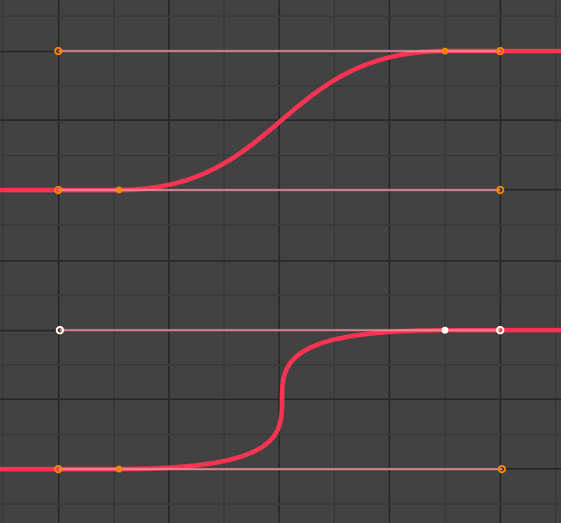

User:Sybren/Reports/2020
< User:Sybren | Reports
Symbols: ✅=100% done from my side; ✔️=my work is done for now, now waiting for something else like a code review; ⭕ may need more attention this week
December 21 - 27
Patches: (all are reviews unless otherwise specified)
- D8687: Directly select animation curves in the graph editor
- D9651: Fix T70316: Custom "Delete Keyframes" shortcut still requires confirmation
- Created D9918: RNA: make
bpy.data.orphans_purge()return number of deleted datablocks - Created and landed D9915: VSE: handle IO errors when reading disk cache header and version
- Created D9916: ImBuf: Add error handling to IMB_indexer_open
Fixed/Closed tasks:
- T83291: Grease pencil objects not responding to Object>Relations>Make Single User>Object Animation
Investigated/Spent time on:
- Upgrade of Blender Store
December 14 - 20
Plans for next week:
- Blender Store upgrade.
Patches: (all are reviews unless otherwise specified)
- D9617: Fix X11 library underlinking that makes the package FTBFS in Debian with bfd linker
- D3089: Cycles: add experimental support for an Alembic procedural
- D9695: Nla Refactor: Better blend function parm naming
- D9414: VSE: Render in size nearest to preview image
- D9875: Animation: Smart Bake Option for Bake Action
- Landed D9617: Fix X11 library underlinking that makes the package FTBFS in Debian with bfd linker
- D7997: UI: FModifier layout updates, drag and drop
- D9812: made "operator_modal_draw.py" self contained
- Landed D9841: FIX T83716: Dope Sheet - incorrect scaling of the channel UI elements
Fixed/Closed tasks:
- T75839: Thumbnails: Handle missing avatars (Blender ID)
- T83838: Hair curves exported to alembic cannot be used as ue4.26 groom hair (feature request)
- T83550: "Could not insert keyframe, as RNA path is invalid for the given ID..." (invalid)
- T83468: Animation: difference between viewport and rendered
- T83363: FBX frame rate 25 issue (no reply)
- T83281: find_node_operation and add_relation errors on old rig file (doesn't look like bug to me)
- T83351: Baked object rotation has discontinuities
Investigated/Spent time on:
- Discussed Shot Tools for the Blender Animation Studio with Jeroen.
- Fix Blender ID deleting thumbnails in certain conditions
- Meeting with Francesco about Kitzu/Flamenco/Storage/Auth architecture
- Discussed issue with inline comments on patches in Phabricator (Firefox/Edge problem) with James.
- Meeting with Ton about BI/BF organisation structure & developer roles.
- Animation & Rigging module meeting
- T57003: Copy visual pose and paste over frame range
- T83911: Bone IK constraint - add lockable axis properties for stretching
December 7 - 13
Plans for next week:
- ✅ Monday: discuss Shot Tools for the Blender Animation Studio with Jeroen.
- ✅ Tuesday: discuss kitsu-flamenco-svn with Francesco.
- Thursday: A&R Module Meeting
- ✅ Help Anna with avatar issue on Blender ID.
- Investigate new IK scaling option to scale bones only in the Y-direction.
- Continue review of Ankit's final GSoC patches: Exporter D8754 and importer D8753
- Read through T83710: Click Inserting Keyframes in the Graph Editor should obey Automatic Time Snapping
- ✅ Read through T79024: 2.83.2 and 2.9.0 problem with bone selection inside another bone
Patches: (all are reviews unless otherwise specified)
- D9776: Add comment to clarify the use of mesh::symmetry
- D9611: LibOverride: Add initial support for adding new NLA tracks.
- D9773: Fix several issues with handling of numpy in CMake.
- D3089: Cycles: add experimental support for an Alembic procedural
Fixed/Closed tasks:
- T81745: Assign Automatic Weights fails with Mirror Modifier + Vertex Groups X Symmetry on
- T83159: Camera turns in oposite direction to track target with track to and copy rotation constraint
Investigated/Spent time on:
- Committing Clang-Tidy
modernize-loop-convertfixes (11c4066159) - T83479: Inconsitency in channel pinning mechanic (needs more info)
- T83281: find_node_operation and add_relation errors on old rig file (needs more info + simpler file)
- rBfb82cfb5: Animation: Show Channel Group Colors is now off by default
- Discussed automated tests in the buildbot with James
- T83479: Inconsitency in channel pinning mechanic (known limitation)
- Read through Shot Tools in preparation for next week's meeting with Jeroen.
November 30 - December 6
Plans for next week:
- Bug fixes & patch reviews
- Thursday & Friday holiday
Patches: (all are reviews unless otherwise specified)
- ⭕ Continued work on D9649: Tests: run suites instead of individual test cases
- ⭕ D9658: Allow vertex tools to operate on weight groups when armature is in object mode
- D9661: NLA: Action Strip Defaults Sync Length On
- Landed rBc760ab0d: Cleanup: Graph Editor, refactor selection operators
- D9611: LibOverride: Add initial support for adding new NLA tracks.
- D8754: Wavefront OBJ: Adding a faster exporter
- Landed D7437: Add Custom Space to Constraints (release notes)
- D9693: Nla Refactor: nlaevalchan_validate_index_ex()
- D9661: NLA: Action Strip Defaults Sync Length On
- D9695: Nla Refactor: Better blend function parm naming
- D9694: Nla Refactor: Blend functions explicit Div0 check
- D9696: Nla Refactor: Split animsys_evaluate_nla()
- Created and landed D9735: Point users to new location of "Show Group Colors" option
- D9738: UI/BPY: Allow Python operator polls to set the disabled hint
Fixed/Closed tasks:
- T83051: Keyframe_points not set in right place
- T81628: Moving python-made channels freezes Blender
- T82309: Keying set failed to set keyframes
Investigated/Spent time on:
- Blender Store/Cloud/ID support.
- Getting my laptop more or less updated to test D9649 (Tests: run suites instead of individual test cases) on Windows.
- Created T83222: Clean up CMake scripts for automated tests
- T82811: Sanitize Release Notes structure and process
- Fix ACPI issue on my desktop machine (couldn't fix, workaround is to boot to Windows before rebooting to Linux)
- Get CentOS 7 virtual machine updated for doing my Linux Platform Maintainer duties
- Build libraries for PugiXML on Linux (D8628: Deps: Add pugiXML as an official dependency)
- T83246: VFX Reference Platform 2021 Compatibility (proposed either announce VFX Platform compatibility in 2021, or move to Python 3.9)
- Created T83390: Remove temporary, for-one-release deprecation hints
- Bunch of Clang-Tidy fixes (
modernize-deprecated-headers,modernize-use-override,modernize-use-using, and worked onmodernize-loop-convertto commit next week) - New version of the "snappier animation" image:

{kind=link}
November 23 - 29
Plans for next week:
- Update Long-Term Roadmap (take off visual keying, add copy-paste)
- ✔️ Continue working on D9649: Tests: run suites instead of individual test cases.
- Look at bundling the Pose Thumbnails add-on with Blender.
- Go over design tasks, close ones that are done (i.e. approved on). After implementation is done, design should be moved to wiki.
- Review T81785: Implementation: Modal Key Manipulation Operators
- Discuss Time Selection proposal
- Discuss T82359: Stronger binding of Active and Selected
- Review T81704: Spline IK "Bone Original" Y-scale Causes Scaling
- Friday is Code Quality day
Patches: (all are reviews unless otherwise specified)
- Updated description of T82932: Mirror Pose: Custom center of symmetry
- D9646: Fix T82758: Convert Proxy to Override: Local constraints aren't saved.
- Landed D8915: Negate Shear in Copy Rotation
- Created D9649: Tests: run suites instead of individual test cases
- Continued review of D8754#239826: Wavefront OBJ: Adding a faster exporter (found some differences between old & new exporter, did some timing checks)
- Accepted D9646: Fix T82758: Convert Proxy to Override: Local constraints aren't saved.
- D9646: Fix T82758: Convert Proxy to Override: Local constraints aren't saved.
Fixed/Closed tasks and fixes for unreported issues:
- Fixed T52744: Euler Filter doesn't work by landing D9602 (release notes)
- Fixed D9639: Graph Editor: fix keyframe not activating in certain cases (unreported)
- Fixed T82156: Object with Copy Rotation Constraints translates when being parented (by landing D9413)
- Closed T83044: Keyframe returned by keyframe_points.insert() gets ruined by any other call to keyframe_points.insert() (not a bug)
- Closed T81628: Moving python-made channels freezes Blender (no response)
Investigated/Spent time on:
- DevOps meeting with James Monteath.
- Going through the release notes to test new/changed features for the 2.91 release.
- Preparation of the A&R module meeting.
- Patched server issue with Blender ID enough to not overload Sentry.
- T83023: Cycles modifier changes the shape of the F-Curve
- T83051: Keyframe_points not set in right place
- T82309: Keying set failed to set keyframes
November 16 - 22
Plans for next week:
- ✅ Land D9413: Fix T82156: Object with Copy Rotation Constraints translates when being parented
- Review T81785: Implementation: Modal Key Manipulation Operators
- Discuss Time Selection proposal
- Discuss T82359: Stronger binding of Active and Selected
- ✅ Go to the Blender office to make more entrance keys.
- ✔️ Look at a way to make
ctestrun unit tests per module, instead of invoking the binary for each individual test case. - Continue review of Ankit's final GSoC patches: ✅ Exporter D8754 and importer D8753
- Go over design tasks, close ones that are done (i.e. approved on). After implementation is done, design should be moved to wiki.
- Review T81704: Spline IK "Bone Original" Y-scale Causes Scaling
- ✅ Review D8915: Negate Shear in Copy Rotation
- ✅ Land D9602: New Euler filter implementation
Patches: (all are reviews unless otherwise specified)
- D9551: fix T82455: vec_roll_to_mat3_normalized() returns NaN for bones with longitudinal axis close to -Y
- Land D9515: Fix T82519. Add second driver change recalc transform
- D9578: Force C linkage for all DNA type headers (accepted)
- D9577 Atomics: require 64bit atomics to build, enable them on 32 bit when available (just discussion)
- D9497: Clang-tidy, bugprone-exception-escape.
- D9469: Copy Transforms: implement invert and split mode options.
- D9584: Guarded allocator: Fix lock-free allocator tests
- D7437: Add Custom Space to Constraints
- D9590: Atomic: Cover with unit tests
- Created D9602: New Euler filter implementation
- D9505: support arm64, including embree-fork
Fixed/Closed tasks:
- Fixed T82740: Drivers on movie clip datablock crash on file open
- Fixed T82588: Box Select selects keyframes hidden by "Only Show Selected"
- Fix error message prefix in
Quaternion.to_euler()(unreported)
Investigated/Spent time on:
- Move Animation & Rigging TODOs as per the accepted proposal (link)
- Triaged T82309: Keying set failed to set keyframes (unable to reproduce, but spawned interesting discussion)
- Triaged T82587: Bad naming on F-curve visibility option in User Preferences > Animation (unclear what the problem is)
- Creating extra build directory for building release branches. This should make it faster to switch between release & master branches.
- Moving more mail from personal mailbox to Blender GMail.
- Discussing distinction between supported and unsupported platforms on D9577 and bf-committers.
- T52744: implementing a new Euler discontinuity filter
- Create a GreaseMonkey script to easily link stuff from Phabricator
- T82776: Sequencer: Driver on any strip property does not invalidate its cache (invalid example files)
November 9 - 15
Plans for next week:
- ✅ Move Animation & Rigging TODOs as per the accepted proposal (link)
- ✅ Review D9497: Clang-tidy, bugprone-exception-escape.
- ⭕ Review D7437: Add Custom Space to Constraints
- ⭕ Review D9196: Graph Editor - Code refactoring for the selection operators
- ⭕ Review and hopefully land D8915: Negate Shear in Copy Rotation
- Land D9413: Fix T82156: Object with Copy Rotation Constraints translates when being parented
- Review T81785: Implementation: Modal Key Manipulation Operators
- Discuss Time Selection proposal
- Discuss T82359: Stronger binding of Active and Selected
Patches: (all are reviews unless otherwise specified)
- Landed D9391: Animation: move group colors switch to user preferences (which closed design task T82134).
- D8915: Negate Shear in Copy Rotation
- D9534: Fix T82624: Skin modifiers root bone cannot be moved
- D9410: refactor vec_roll_to_mat3_normalized() for clarity
- D9525: Test cases for vec_roll_to_mat3_normalized
Fixed/Closed tasks:
- T82612: Login issue email verification (Blender Cloud/Store support question, redirected to cloudsupport mailbox)
- T81813: Keyframe handles dont follow keyframes (fix by Wayde Moss)
- T82434: Bad performance with alembic file exported by speedtree (closed as invalid, performance is known to have dropped with 2.81 actually loading face normals properly instead of ignoring them)
Investigated/Spent time on:
- Fixing a problem with the active keyframe unittests in debug mode + ASAN, and improved the unit testing framework so that we can test for
BLI_assert()as well. - Moving emails to GMail (ongoing process)
- Preparing module meeting agenda
- Tuesday Talks.
- Going through TODOs and classifying them (link)
- Resurrect the Pose Thumbnails add-on so it works with recent Blender again. Also included a script that can generate GitLab releases.
- Describe workboard columns on phabricator module page
November 2 - 8
Plans for next week:
- ✅ Go through list of TODOs on phabricator (see A&R meeting notes)
- ✅ Land D9391: Animation: move group colors switch to user preferences
- Land D9413: Fix T82156: Object with Copy Rotation Constraints translates when being parented
- Discuss Time Selection proposal
- Discuss T82359: Stronger binding of Active and Selected
- ✅ D9453: Fix T82210 Bake action cleanup
- ✅ D9447: F-Curve: Noise Modifier depth fixes
- D8915: Negate Shear in Copy Rotation
- T81785: Implementation: Modal Key Manipulation Operators
- ✅ Describe workboard columns on phabricator module page
Patches: (all are reviews unless otherwise specified)
- Created D9413 for T82156: Object with Copy Rotation Constraints translates when being parented
- D9447: F-Curve: Noise Modifier clamp depth
- D9410: The conversion of roll to matrix breaks in some cases
- D9488: Basic personal notifications (Blender Cloud)
Fixed/Closed/Triaged tasks:
- Fixed T82312: Parenting is broken (but that re-opened T82156, for which D9413 is the proper solution)
- Triaged T82347: Problem duplicating after selecting from outliner, and lots of console error messages after deleting child bones (example too complex)
Investigated/Spent time on:
- T82309: Keying set failed to set keyframes (asked for smaller example file)
- T82303: FBX Export action bug (re-tagged as Data/Assets/IO instead of Animation)
- T81628: Moving python-made channels freezes Blender (asked for simpler example)
- Figuring out why Chrome loops between Flamenco Manager and Blender Cloud, while things work fine on Firefox (reason: Chrome doesn't send the Cloud session cookie with XHR request from Flamenco Manager, Firefox does)
- Meeting with Dalai & Francesco about USD.
- Meeting with Sergey about transferring Linux Platform Maintainer role from him to me.
- Created design task T82359: Stronger binding of Active and Selected
- T79670: Baking animation of bones affected by a curve (spline IK) is wrong
October 26 - Nov 1
Plans for next week:
- Bug Fixing Week
- Code Quality Friday
Patches: (all are reviews unless otherwise specified)
- ⭕ D8915: Negate Shear in Copy Rotation.
- Accepted D6379: Add a Un-Bake FCurves operator
- D9313: create ed_draw.c
- Created D9391: Animation: move group colors switch to user preferences
Fixed/Closed tasks:
- Closed TODO T50433: Errors in NLA editor Add and Subtract (Wayde Moss found this was already solved)
- Closed TODO T47035: NLA - Quaternion blending in "Add" mode should use quaternion math instead (Wayde Moss found this was already solved)
- Closed TODO T39051: Keyframing animation layers in NLA doesn't work (Wayde Moss found this was already solved)
- Triaged T81975: Connected child bone's nominal location values affected when transformed about 3D cursor (relabeled as Known Issue)
- Created T82134: Allow disabling Group Colors in animation editors via preference
- Fixed T82156: Object with Copy Rotation Constraints translates when being parented
- Closed T82098: FBX export animation bug: quaternion keyframe wrong (not enough info)
- Triaged T81922: The Graph Editor doesn't show any curve of the Armature (when selecting bones in outliner)
Investigated/Spent time on:
- T81874: Box Select Keyframes doesnt set an active keyframe
- Configure the Blender Cloud reverse proxy for unconditional access to the old Cloud (for accessing things that are otherwise forwarded to the new site).
- Create test build for D8915: Negate Shear in Copy Rotation
- Prepare a provisional agenda for this week's Animation & Rigging meeting.
- Wrote technical documentation for Object Parenting and updated the manual.
- Blender Store support (VAT check issues)
- Blender Cloud support (login issues)
- Create `{{Phab|D1234}}` wiki template
October 19 - 25
Plans for next week:
- Trying out the new OBJ exporter to produce a custom Steam VR Home
- Together Apart event on Friday + half a day for preparation on Monday/Tuesday
- Animation & Rigging module meeting
- D6379: Add a Un-Bake FCurves operator
- Help out with the deployment & infrastructure for the new Blender Cloud site..
Patches: (all are reviews unless otherwise specified)
- D6379: Add a Un-Bake FCurves operator
- D7997: UI: FModifier layout updates, drag and drop
- D9196: Graph Editor - Code refactoring for the selection operators
- Created D9269: UI: Playback Synchronization menu improvement
- D9244: Fix T81704, Spline IK "Bone Original" Y-scale Causes Scaling
- Created D9328: Fix T81890: Active keyframe changes with active FCurve on deselect of keyframe
Fixed/Closed tasks:
- Fix: Animation, Draw active keyframe handles only when Bézier (unreported)
- Fix #81890: Active keyframe changes with active FCurve on deselect of keyframe
Investigated/Spent time on:
- Tuesday Talks
- Created #81890: Active keyframe changes with active FCurve on deselect of keyframe
- Triaged #81874: Box Select Keyframes doesnt set an active keyframe
- Started organising the Anim & Rigging module design pages on the wiki and discussing design documentation within the module.
- #81452: Policy for style guide: code comments
- Set up a reverse proxy for https://cloud.blender.org/ to allow specific URL prefixes to be sent to a different server.
- Started discussion on quaternion interpolation on devtalk.
October 12 - 18
Plans for next week:
- Review D9196: Graph Editor - Code refactoring for the selection operators
- Further work on Selection Sync
- ⭕ Review D6379: Add a Un-Bake FCurves operator
- User preference to turn off bone group colors in the animation channel list.
- Update documentation for the Parent Inverse matrix.
- Look at https://twitter.com/birdddev/status/1291565939952103424 for possible integration/bundling with Blender.
- #81836: Design: New Graph Editor Key Manipulation Operators
Patches: (all are reviews unless otherwise specified)
- D8915: Fix shear, Skip matrix decomposition in Copy Rotation if all axes and all or none are inverted.
- D9127: Use Blender Cloud login session
- D9199: Add "frozen fcurve samples" to preserve half of the memory
- D9196: Graph Editor - Code refactoring for the selection operators
Fixed/Closed tasks:
- Closed #71234: Custom property doesnt update when rendering animation (bit of a mess, original issue was resolved already)
- Closed #81302: Unable to bake rig correctly (low quality, to complex)
- Fixed #81743: Changed behaviour in RGB Curves node interpolation
- Fixed #62463: unable to select anim channel for unselected node
- Closed #81302: Baking bones with visual keying produces incorrect result (duplicate)
- Fixed #T76596: Cursor to selected missing in snap pie menu on the graph editor.
Investigated/Spent time on:
- #80599: Blender Cloud folder text on the screen very small
- #81577: Should "Make instances real" keep anitmation data from original objects?
- ⭕ #81541: Symmetrize Transform Constraint, Y rotational axis unexpected results.
- #81135: Graph Editor Expand/Collapse Channels collapsing issue (changed from Bug to Known Issue)
- ⭕ #62463: Skeleton rig with keyframes prevents selection of Shader Nodetree channels in Dope Sheet and Graph Editor
- ⭕ #81704: Spline IK "Bone Original" Y-scale Causes Scaling
- #81452: Policy for style guide: code comments
- Animation & Rigging module meeting (notes)
- Wrote analysis of selection sync issues on devtalk. Includes a proposal for a fix.
October 5 - 11
Plans for next week:
- Update documentation for the Parent Inverse matrix.
- Look at https://twitter.com/birdddev/status/1291565939952103424 for possible integration/bundling with Blender.
- Put Quaternion SLERP interpolation on the agenda.
- I extended the "lossleys keyframing" (#81353) to also apply to ctrl+click in the graph editor and slider adjustments. Bassam tested this, will merge to master next week.
- Review D9127 Use Blender Cloud login session
- Animation & Rigging module meeting on Thursday 15:00 CET
Patches: (all are reviews unless otherwise specified)
- D7737: Fix T76595: Indicate the Active Keyframe in Graph Editor
- ✅ Closed D7572: ActionConstraint: Fallback Value (same functionality was accepted from other patch)
- D8296: Feature: NLA: Evaluate Whole NLA Stack in Tweak Mode (needs separation of cleanup/refactor and functional changes)
- ✅ D8537: UI: Add auto keyframing popover (accepted)
- ✅ D9035: Blender ID integration (new Blender Studio website, accepted)
- D9121: Fix T67776: Animation/value keyframe slider doesn't appear in dope sheet
- D8687: Directly select animation curves in the graph editor
- D8904: FCurves: Offset modifier
- D9054: Pose Sliding tools improvements
- D9019: Make the operators that change keyframe data update the motion paths
Fixed/Closed tasks:
- Closed #50725: Alembic export doesn't take 'Custom Properties', as alembic non-standard data. (was fixed earlier, kept it open to attract more demo files)
- Fixed #81353: Insert keyframes while preserving shape of curve
- Closed #81209: Driver logic is inverted for checkboxes (not a bug)
- Closed #81001: Rig keeps seperating from the mesh upon reopening file. (no reply after a week)
- Fixed #81218: Crash in pose mode using a driver on bendy bone Segments.
Investigated/Spent time on:
- Fix unit tests breakage caused by rB8683d4e88f2e.
- Blender Store / Blender ID support.
- Ported Joshua's Animato animation system documentation from the old to the new wiki.
- Discuss some Blender Cloud server/Django/nginx things with Francesco.
- Discuss SLERP for quaternion interpolation with Tangent Animation.
- Extended the "lossleys keyframing" (#81353) to also apply to ctrl+click in the graph editor and slider adjustments. Bassam tested this, will merge to master next week.
September 28 - October 4
Plans for next week: (✅=100% done; ✔️=work is done, now waiting for something else like a code review; not everything can be marked "done").
- Continue review of Ankit's final GSoC patches: Exporter D8754 and importer D8753
- ✅ #81353: Insert keyframes while preserving shape of curve
- #76595: No indication of active keyframe
- Continue review of various NLA improvements by Wayde Moss.
- Install a newer Linux on my computer.
Patches
- Reviewed D9035: Blender ID integration (new Blender Studio website)
- Reviewed D9057: Fix T81330: Alembic Import not adding modifiers to constant meshes with animated vertex colors
- ✅ Created D9090: Cleanup: refactor
ed_screen_context() - ✅ Created D9095: Cleanup: Use enum for return values in context callbacks
Fixed/Closed tasks:
- Fixed #81214: Crash on Action constraint without action
- Fixed #80967: Alembic, Blender crashes when the imported sim from Houdini starts
- Fixed #80121: Forcefield F-curve modifier changes don't reset frames in memory
- Fixed #71981: Alembic vertex interpolation can jumble mesh
- Fixed #80769: RGBA movie rendering: WebM/VP9 codec missing alpha channel (added warning to manual)
- Closed #81164: Switching to pose mode occurs crashes (2.90.1, fixed in master)
Investigated/Spent time on:
- #81001: Rig keeps seperating from the mesh upon reopening file (too complex example file)
- Put out a call for Alembic custom properties examples on Twitter, because people aren't responding on the task on Phabricator.
- Created #81257: Initial version of USD Importer (TODO task)
- Added a reCaptcha plugin to Blender Store.
- #81262: Search Box for Bone names not behaving as expected (needs more info)
- Fixed bug in devfund site, and deployed the fix to production.
- Animation & Rigging Module meeting (notes)
September 21 - 27
Plans for next week: (✅=100% done; ✔️=work is done, now waiting for something else like a code review; not everything can be marked "done").
- Investigate #80121
- USD Project leadership things
- Continue review of Ankit's final GSoC patches: D8753: Importer, and D8754: Exporter.
Patches:
- Accepted D7783: Keyframe: Copy To Selected (should be merged after D7737)
- Continue review of Ankit's final GSoC patches: D8754 Exporter.
Fixed/Closed Tasks:
- Closed #80593: Smooth Curve is Broken (no reply after a week)
- Closed #80470: Crash when trying to assign Automatic Weights to this particular mesh (could reproduce, not any more with current master, assuming fixed)
- Fixed #80708: F-Curve Cycle modifiers change behavior after editing NLA strip
- Fixed #80874: Actions inside NLA Strips are not copied to buffer/append
- Closed #80977: Inconsistent behavior with armature deformation of objects disabled by driver (duplicate)
- Fixed #80986: Scripted Action has no ID Root (Cannot be assigned to Action Constraint)
Investigated/Time Spent on:
- Sent NVIDIA-Blender USD meeting notes to the BF-USD mailing list.
- Constructed some Alembic files with custom properties for Daniel Bystedt.
- #81012: Pose Library not saving bones with certain prefixes
- #79954: Generic Rigid Body Constraint Bug
- #81135: Graph Editor Expand/Collapse Channels collapsing issue (dug into the issue)
September 14 - 20
Plans for next week: (✅=100% done; ✔️=work is done, now waiting for something else like a code review; not everything can be marked "done").
- USD Project leadership things (still TBD, max 4 hours/week)
- Continue review of Ankit's final GSoC patches: D8753: Importer, and D8754: Exporter.
- ✅ Review D8920: AWS S3 storage for Blender Studio files
- ✅ Send Daniel Bystedt some Alembic files with different ways of storing custom properties (
.userPropertiesvs..arbGeomParams) to test. - ✅ Review D7783: Keyframe: Copy To Selected (accepted, but is dependent on another patch)
Patches:
- Landed D8869: Alembic export: write custom properties. Includes release notes and updates to the manual.
- Landed D8287: Bugfix: NLA: Transition to Meta Strip Incorrect Evaluation
- Reviewed D8296: Feature: NLA: Evaluate Whole NLA Stack in Tweak Mode
- Landed D8752: Graph Editor : Fix for f-curves limitation
- Reviewed D7437: Add Custom Space to Constraints (many questions to be answered)
- Landed D8022: Action Constraint: Add manual time factor input control.
- Reviewed D7737: Fix T76595: Indicate the Active Keyframe in Graph Editor
- Reviewed D8916: AWS S3 storage for Blender Studio
- Reviewed D8924: Add tests for file upload helpers
Fixed/Closed Tasks:
Investigated/Time Spent on:
- Moved SVN Manager to Gitlab and upgraded it to use the latest of my
Makefiles. This makes it much easier to do cross-compilation for different platforms, and to manage the application version. - Some error message hunting in Blender Store.
- Meeting with NVIDIA about USD (meeting notes coming up on devtalk)
Animation patches I would like in 2.91 but need some attention:
- D7437: Add Custom Space to Constraints
September 7 - 13
Plans for next week: (✅=done; ✔️=work is done, now waiting for something else like a code review; not everything can be marked "done").
- ✅ Review D8752: Graph Editor : Fix for f-curves limitation
- ✅ Review D7737: Fix T76595: Indicate the Active Keyframe in Graph Editor
- ✅ Review D7783: Keyframe: Copy To Selected
- Continue review of Ankit's final GSoC patches: D8753: Importer, and D8754: Exporter.
- ✅ Land D8869: Alembic export: write custom properties
- Help onboarding Anna Sirota.
- ✅ Upgrade the studio's SVN server.
- Help the studio with SVN client issues.
Patches:
- Reviewed D8792: Library Linking: support instantiating object data on append/link.
- Accepted D8434: UI: Changes to timeline playback popover
- Reviewed D8805: Fix T80464: Crash deleting bone constraints when the armature layer is not active
- Reviewed D8514: Rigify: Code cleanup: create_selection_sets()
- Reviewed D8802: Rigify: Code Cleanup: Use ControlLayersOption class
- Reviewed D8851: Child-Of now sets inverse matrix automatically upon creation
- ✅ Created D8869: Alembic export: write custom properties
- Initial review of D8754: GSoC OBJ Exporter
Fixed/Closed Tasks:
- Closed #80319: Camera's matrix exported to alembic has swapped axis (was question, not bug report, but asked in a clear, friendly way so I answered anyway)
- Closed #74080: Drivers - Invalid python expression after rendering (no reply after a week)
- Fixed #80490: Child Object jumps away with changing the parent bone (by documenting current behaviour)
- Closed #79771: Particle system and drivers (invalid)
Investigated/Time Spent on:
- Added Blender to the list of Tools with USD Integraion on the Academy Software Foundation wiki.
- Hand-holding Blender Store to manually renew some Cloud subscriptions.
- Fixed a
readability-inconsistent-declaration-parameter-nameClang-Tidy error. - Refactored
object.parent_setoperator in preparation of a fix for #80490. - Reported #80590: Sometimes status bar context menu is only partially visible
- Tuesday Module Meetings (notes)
- Investigated the current status of Face Maps: My findings & request for more info.
- Worked on #50725: Export custom properties to Alembic.
August 31 - September 6
Plans for next week: (✅=100% done; ✔️=work is done, now waiting for something else like a code review; not everything can be marked "done").
- Review Ankit's final GSoC patches: D8753: Importer, and D8754: Exporter.
- ✔️ Continue working on exporting custom properties to Alembic.
- Bugfixing & patch review.
- Look at Face Maps, and decide how to move it forward.
Patches:
- Initial glance over D8752: Graph Editor : Fix for f-curves limitation
- Landed DevFund: D8610: Fix ValueError when remote address contains port number
- Landed DevFund: D8609: Cleanup: remove unused RemoteAddressRecorder middleware
- Reviewed D8434: UI: Changes to timeline playback popover
- Reviewed D8792: Library Linking: support instantiating object data on append/link.
Fixed/Closed Tasks:
- Closed #72204 Universal Scene Description (superseded by two other design tasks).
- Fixed #80126 Alembic Import dialogue has overwrite protection UI (by committing Philipp's patch).
- Fixed #80320 USD: remove library initialisation hack
- Fixed #79553 StretchTo constraint: Apply Pose as Rest Pose changes bone length
- Closed #79980 Blender 2.83 and 2.83.5 - NLA - Action editor name doesnt update (no reply after week)
- Closed #79771 Particle system and drivers (invalid)
Investigated/Time Spent on:
- Reviewed Ankit's final GSoC report.
- Monkey Butler duties.
- #79553 Apply Pose as Rest Pose change the bonelength
- Hand-holding Blender Store to manually renew some Cloud subscriptions (twice in the same week).
- Call with Daniel Bystedt about Alembic, he agreed to become the new commisioner for the Alembic project #73363
- Module team meetings
- Lead an evacuation exercise at Blender HQ, and did a check of all the emergency exits.
- Installed plugins for DYMO printer in Blender Store, and traced back other non-committed changes.
- Pushed updates to fund.blender.org to production server.
- Code Quality Day, worked on the following Clang-Tidy rules #78535:
readability-redundant-preprocessorreadability-const-return-typereadability-static-accessed-through-instancereadability-redundant-declarationreadability-qualified-autobugprone-incorrect-roundingsbugprone-copy-constructor-init
August 17 - 23
Plans for next week: (✅=100% done; ✔️=work is done, now waiting for something else like a code review; not everything can be marked "done").
- ✅ Holiday
Patches:
- ✅ Created for DevFund: D8610 Fix ValueError when remote address contains port number
- ✅ Created for DevFund: D8609 Cleanup: remove unused
RemoteAddressRecordermiddleware - Accepted D8611 Depsgraph: simplify build API
- Closed T73268 Blender Linking Time & GTests
- Accepted D8614: Depsgraph: simplify DEG_evaluate_* api
- Another review pass of D7437 Add Custom Space to Constraints
- ✅ Created D8615: Silence
-Wmaybe-uninitializedwarning on GCC/Linux. - Accepted D8627 FFmpeg: Improve multi-threading settings
- Reviewed D8616 Depsgraph: refactor tagging after time changes
- ✅ Created D8658 Cleanup: remove
exec()calls from custom property editor - Landed D7602 NLA: Fix Sync Length
- Landed D7533: Fix T63675: Keying outside NLA strip not possible
Fixed/Closed Tasks:
- T78198 BLI_assert fails when applying camera image on mesh with subdivision modifier. (closed as duplicate)
- Fix T75936: Alembic, allow exporting of invisible objects.
- Same as above, but then for USD (no tracker task).
- Fix T79714: Wrong result when projecting texture from camera on object with modifier.
- Close T72061 Video editing: keyframe values not setting/changing (not a bug but unexpected NLA track)
Investigated/Time Spent on:
- Strange ghost subscription in the Store.
- Blender ID/DevTalk support mail.
- Mesh: merge
mesh_create_eval_final_{view,render}functions (fc5eab3570) - T79786 Renaming custom property doesn't update its animation data (classified as known issue)
- T79771 Particle system and drivers (asked for more info)
- Cleanups of
BKE_scene_get_depsgraph()to avoid situations as the crash in 5cc08510e0. - Raised a concern on 216d78687d (GPUShader: GL backend isolation) as it caused crashes for artists here in the studio.
- Created Python script to (at least partially) fix VSE data that went missing.
- Worked on T50725 (writing custom properties to Alembic). I also contacted Tangent Animation to inquire about the work of Philip Luk on the subject.
August 10 - 16
Plans for next week: (✅=100% done; ✔️=work is done, now waiting for something else like a code review; not everything can be marked "done").
- ✅ Finish T75936 Objects not exported to Alembic if disabled in render.
- Finish T71908 Keyframed parameters are not preserved when frame_change_post handler is used.
- Handle review comments & land D8574 Fix T79714: Projecting texture from camera fails.
- Design writing custom properties to Alembic. Also: create a task for this.
- Mentoring Ankit's GSoC project.
- Bugfixing.
Patches:
- Accepted D8498 Tests: move remaining gtests into their own module folders
- Reviewed D8434 UI: Changes to timeline header popovers
- Accepted D7602 NLA: Fix Sync Length
- Accepted D7533 NLA: Evaluate Tweak Strip Within Synced Action Bounds
- Reviewed D7600 NLA: Always Show All Strips
- ✔️ Created D8574 Fix T79714: Projecting texture from camera fails
Fixed/Closed Tasks:
- Fixed T65148 Can't use shape key properties in driver when modifiers generate a new mesh (in master)
- Fixed part of T77115 (Mesh Cache Is Evaluated When Display Type Is Bounds or Outline Display Flag Is Off) by writing documentation in the manual.
Investigated/Time Spent on:
- Looked into Django Inheritance Manager for Francesco & the Web team.
- Store/Cloud support. The Store is getting overloaded, so sometimes it needs manual intervention to put it back on its feet.
- Cleaned up the wiki pages about code reviews & code contributions:
- I made a clearer separation between "tools" and "process". I moved "process" information from the "tools" page to the "process" page, and also updated the "process/code review" link in the wiki sidebar to actually point to the process page. I also added cross-links between the "tools" and "process" pages, and added a one-liner description that explains the scope of each page.
- Reworded the Guidelines for a Patch, by merging the two lists of guidelines we already had, and rewording them so that it's now a consistent list. I added emphasis on key words in the list to make it easier to scan through.
- Added wiki page Process/Contributing_Code/Review_Playbook.
- Continued work on T71908 Keyframed parameters are not preserved when frame_change_post handler is used (explicitly make tagging-for-update on evaluated datablocks a no-op, preliminary testing with writing to evaluated datablocks from frame-change-post handlers).
- Raised concern on https://developer.blender.org/rB9adedb26055f03263fefba380980ee2abcb5327e (fix for T77409: Crash showing vertex/face duplicators in edit-mode)
- Reverted the above commit, as it changed how duplis are exported to Alembic and USD (which was flagged by a failing unit test).
- Made the SMTP server on proog.blender.org compatible with Mozilla Thunderbird v78 (Thunderbird disabled support for TLSv1.0 and TLSv1.1, whereas Proog only supported up to TLSv1.0).
- T79118 Incorrect rotation using driver or constraint (marked as known issue)
- T74080 Drivers - Invalid python expression after rendering (asked for more info)
August 3 - 9
Plans for next week: (✅=100% done; ✔️=work is done, now waiting for something else like a code review; not everything can be marked "done")
- Continue work on T71908 Keyframed parameters are not preserved when frame_change_post handler is used
- Continue working on exporting invisible objects to USD/Alembic
- Review patches by Wayne Moss (NLA editor improvements)
- Bugfixing
Patches:
- ✅ Landed D8423 Cleanup: converted Depsgraph Building Pipeline to object-oriented code.
- Initial review of D8457: Added a segfault handler which is active during python execution to print a python backtrace on segfault
- Reviewed D8464 Fix T79408: ungroup operation update animation data incorrectly
- Reviewed D7323 util: add option to format only changed files to make format
- Reviewed D6507 Remove VSE Strip Proxy Resolution limitation (accepted)
Fixed/Closed Tasks:
- Fixed T78758 Alembic export: crash when file is in use by another application
- Fixed T79127: crash on
scene.ray_cast()with non-viewport view layer - Closed T79577 NLA Strips reverting their Extrapolation from "hold" to "hold forward" (duplicate of T66946)
- T78535 Code quality day: Clang-Tidy, finished cleaning up the
readability-else-after-return,readability-function-size(mostly byNOLINTmarkers),bugprone-parent-virtual-call,bugprone-suspicious-missing-comma,bugprone-not-null-terminated-result,bugprone-suspicious-string-compare, andbugprone-infinite-loopwarnings.
Investigated/Time Spent on:
- Triaged T78924: Blender cannot read UV coordinates from arbitrary Alembic properties (unsupported way of storing UV coordinates).
- Talk with ppl from Bunchmark.
- Created task T79558: Cleanup: remove
Scene *from dupli-list (todo for a rainy day) - Reopened T66946 (NLA strips changing extrapolation mode by themselves) and extended the manual to at least document Blender's current behaviour.
- Investigated T79118 Incorrect rotation using driver or constraint (probably limitation of Blender due to conversion of Eulers to Matrix and back).
July 27 - August 2
Plans for next week: (✅=100% done; ✔️=work is done, now waiting for something else like a code review; not everything can be marked "done")
- Bugfixing.
- Mentoring Ankit on his GSoC project.
- Code Quality Day on Friday. I might dive into all those "warning: ‘xxxx’ may be used uninitialized in this function [-Wmaybe-uninitialized]" warnings that keep spamming the build.
Patches:
- ✅ Landed D8375 T79121 Dependency cycle when driver points to property with 'scale' in name
- ✅ Created & Landed D8396 CMake: reject older GCC version when using precompiled Linux libraries
- Created D8423 Cleanup: converted Depsgraph Building Pipeline to object-oriented code.
- Another review pass of D7437: Add Custom Space to Constraints
- Reviewed D8397 Alembic add option to write UVs on every frame
- Accepted D2388 Cycles: add support for rendering deformation motion blur from Alembic caches.
Fixed/Closed Tasks:
- Fixed T79263 Alembic: exported rigid body animation not moving (also fixed for USD, yay common codebase).
- Closed T79338 Rendered Image as a Movie Clip
- T79231 VSE: Audio and Video doesn't sync in playback
Investigated/Time Spent on:
- T79231 VSE: Audio and Video doesn't sync in playback (suggested alternative audio settings that may solve the issue). ZedDB's AV-sync patch doesn't seem to be related.
- USD unit test failing on the buildbot (fixed it in 2584a2a4e7)
- Tried to get USD View working on my last-week-upgraded Kubuntu 20.04 workstation. Unfortunately, building USD View needs
pyside2-uic, which doesn't exist on Ubuntu any more. According to an Ubuntu bugreport this is because of an updated version of Qt, which added Python-generating capabilities to the regular UIC and removed the PySide-specific UIC. - Bumped required CMake version from 3.5 → 3.10. This has been required for weeks already (since D7649 landed).
- T77409 Instance face duplicated geometry doesn't render in edit mode
July 20 - 26
Plans for next week: (✅=100% done; ✔️=work is done, now waiting for something else like a code review; not everything can be marked "done")
- Bugfixing.
- Mentor Ankit on his GSoC project.
- Review RCS: Changing defaults for animation workflow.
- Investigate (and hopefully fix) ffmpeg/audio/video playback sync issue for Hjalti.
Patches:
- ✅ Landed D8047 T77086 Animation: Passing Dependency Graph to Drivers
- ✅ Landed D8334 Fix T77277: building depsgraph inter-driver relations is slow
- Reviewed D8325 Use flat pages for films' "About" pages. (for web team)
- Reviewed D8319 Fix T78994: Clear pose transforms resets all poses even with only_selected
- Reviewed D8315 BLI: move some tests into blenlib/tests
- Reviewed D6507 Remove Resolution limitation
- Reviewed D2388 Cycles: add support for rendering deformation motion blur from Alembic caches.
- Reviewed D7437 Add Custom Space to Constraints (tried unit test in the patch, it's failing)
- ✅ Created D8375 T79121 Dependency cycle when driver points to property with 'scale' in name
Fixed/Closed:
- T77086: Passing Dependency Graph to Drivers
- T75553: python unreliable result for bpy.context.view_layer.name when used in drivers
- Closed: T79137 purple texture
- Closed: T78796 Crash on Assign Automatic Weights operator (closed as resolved, I can't claim the fix though ;-) )
- T77277: DEG::is_reachable is taking 50% of DEG relation rebuild in coffee run file
- T78615: Really slow to return to the previous screen layout (after Maximize Area) in complex scenes (same underlaying issue as T77277)
Investigated/Spent time on:
- T76746: tried to fix Curve writing to Alembic, but it's rather fundamentally broken.
- T79187 "ID Data" → "Make Single User" in Outliner for Curve animation data crashes Blender (investigated, found source of crash, handed over to Nate Craddock for further fixing).
Non-Tracker work:
- Ill half the day on Monday and still recuperating (working from home) on Tuesday.
- Fixed a memory leak in a USD unit test.
- Fixed a linker error with the new Big Test Runner™ when USD and Alembic are disabled.
July 13 - 19
Plans for next week: (✅=100% done; ✔️=work is done, now waiting for something else like a code review; not everything can be marked "done")
- Bugfixing.
- Probably handle feedback on PlaySync.
- Mentor Ankit on his GSoC project.
- Review RCS: Changing defaults for animation workflow.
Non-Tracker Work:
- Continued work on PlaySync, an add-on + server to synchronise VSE edits between Blenders.
Patches:
- ✅ D8290 Fix T78920: missing depsgraph relation when using sound strips in VSE
- ✅ Landed D8257: Allow creation of VSE strips referencing a non-existent file
- ✅ Added
Screen.is_scrubbingRNA property (wiki) - ✅ D8314 Tests: move tests from USD test directory into
io/commonandio/usd - Created D8334 Fix T77277: building depsgraph inter-driver relations is slow
- Reviewed D8319: Fix T78994: Clear pose transforms resets all poses even with only_selected
- Reviewed for web team: D8325 Use flat pages for films' "About" pages.
Fixed/Closed:
- T78920: Missing relation in scene depsgraph: ComponentKey(SCScene, SEQUENCER) → ComponentKey(SCScene, AUDIO)
- T73268: Blender Linking Time & GTests (landed D7649)
- Closed T78740 Dopesheet and Graph Editor curve background white. (invalid report)
- Closed T78462 Drivers not working with local rotation (not a bug, but could help them nonetheless)
July 6 - 12
Plans for next week: (✅=100% done; ✔️=work is done, now waiting for something else like a code review; not everything can be marked "done")
- Work on PlaySync to get it to Minimal Viable Product level, so that it can be used in the Blender Studio.
- Finish work for T73268: Blender Linking Time & GTests
- ✅ Land D8257: Allow creation of VSE strips referencing a non-existent file
- Bugfixing
- Mentor Ankit on his GSoC project.
Non-Tracker work:
- Reduced size of
DupliObject::persistent_idfrom 16 to 8 (or from2*MAX_DUPLI_RECURtoMAX_DUPLI_RECUR). D8222. - USD/Alembic: Reversed order of persistent ID in export name of objects, so that it's clearer which dupli was instanced by which duplicator.
- Nagged to the Alembic discussion mailing list about the lack of reference example files.
- Created PlaySync, an add-on + server to synchronise VSE edits between Blenders. It's still work in progress.
Patches:
- ✅ Created & landed D8233 IO: Fix bug exporting dupli parent/child relations
- ✅ Created D8257: Allow creation of VSE strips referencing a non-existent file
Triaged/Spend time on:
- T78675 bpy.ops.alembic_export not exporting selected geometry (commercial code, way too complex)
- T78462 Drivers not working with local rotation (probably due to silly "local space" hack on constraints)
- D7737 Fix T76595: Indicate the Active Keyframe in Graph Editor (discussed with Hjalti)
June 29 - July 5
Plans for next week: (✅=100% done; ✔️=work is done, now waiting for something else like a code review; not everything can be marked "done")
- Write prototype for remote shared editing in the VSE.
- ✅ Continue with the solution for the bug in the
AbstractHierarchyIteratorclass. - After the above gets solved, continue working on supporting instances in the Alembic exporter.
- Review D3172 (insert key in FCurve without changing curve shape) after Alexander Gavrilov rebases it to current master.
- Review RCS: Changing defaults for animation workflow.
- Bug fixing.
Non-Tracker work:
- Worked on a solution for a bug in the
AbstractHierarchyIteratorclass (used for exporting USD/Alembic). The problem occurs when handling duplis, when a single object duplicates a parent-child hierarchy multiple times. In such a case, selecting which dupli should be the parent of which other dupli is going wrong. - Meeting with Ubisoft Animation Studio (UAS) with Jeroen Bakker, in which UAS gave a demonstration of their in-development Blender data synchronisation tool.
- Reviewed Ankit's code, and passed him for the first GSoC evaluation.
- Reviewed Natalia's work (and some of Mike) for the new Blender Studio site.
June 22 - 28
Plans for next week: (✅=100% done; ✔️=work is done, now waiting for something else like a code review; not everything can be marked "done")
- ✅ Land D7664.
- Fix an issue with instances I found in the
AbstractHierarchyIterator. This impacts the USD exporter and (when D7664 lands) the Alembic exporter. - ✅ Code Quality Friday: Help Sergey with clang-tidy
- ✅ Review Natalia Maniakowska's work for the Blender Studio project.
- ✅ GSoC mentoring of Ankit + evaluation of his work so far.
- Blender Store+Cloud support work (the Store is falling apart under the load of so many subscriptions & orders)
- Bugfixing.
Non-tracker work:
- Discussed patch D7664 with Sergey face-to-face.
- Discussed Blender Studio project design with Francesco.
- Wrote a blog post about Changes to the Alembic Exporter.
- Started a discussion about Python string formatting.
- Blender Store/Cloud support.
- Helped Danny troubleshoot the Blender Guest wifi network at the office.
Closed/Fixed/Finished work:
- Fix T77754 Crash after any alembic import undo in an empty scene (thanks Mont29 for the patch!)
- Fix T77712 Crash on proxied rig with custom bone shape and driver targeting the rig
- Fix T78071 Object drivers driven by outliner visibility not updating automatically (fixed twice, 2nd time was the correct fix)
Reviewed patches:
- D8089 Wavefront: Refactor as OOP style (GSoC)
- D8074 Cleanup: Only update timeline header during playback (accepted)
- D7437 Add Custom Space to Constraints (principle is fine, just small things + unit tests to add)
June 15 - 21
Plans for next week: (✅=100% done; ✔️=work is done, now waiting for something else like a code review)
- ✔️ Handle Sergey's feedback on D7664
- Handle any other incoming feedback on this week's patches.
- Review Natalia Maniakowska's work for the Blender Studio project.
- ✔️ Review D7437 (Add Custom Space to Constraints)
- Investigate & hopefully implement support for instancing in exporter Alembic files.
Design & hopefully support for writing custom properties to exporter Alembic files.- ✅ Write a blog post about the changes to exported Alembic files.
- GSoC mentoring of Ankit.
- Bug Fixing & Patch Reviews.
Fixed/Closed/finished work:
- Removed Alembic's obsolete HDF5 compression format. It only existed as an optional build-time option that was disabled for all Blender releases (0c38436227, 0102b9d47e).
- Fix T77154: Alembic doesn't correctly interpolate between matrices with negative scale. (fixed by committing D8048).
- Closed T77700 Driver access to 'self' property is outdated when changed from app handler (turns out not to be a bug in Blender).
Investigated/Spent time on tasks/reviewing patches:
- T77839 Context menu for button does not display shortcuts with default value of properties (asked for more info from UI team)
- T77712 Crash on linked character with proxy rig and a bone with a text object as custom bone shape (asked for simplification)
- D7293 Add variability to "Bounce" interpolation (accepted the idea and general approach, but many comments about the code)
- D7987 Depsgraph: use blender::Map instead of std::map (overall nice, just a few questions)
- D8022 Action Constraint: Add manual time factor input control. (requested changes, implements the same idea as D7572).
- D7533 NLA: Evaluate Tweak Strip Within Synced Action Bounds (few small nags, close to being accepted)
- T77754: Crash after any alembic import undo (unable to reproduce, but Philipp Oeser (lichtwerk) did reproduce it, so I marked it as resolved, but he still can reproduce and I can't).
- D7783 Keyframe: Copy To Selected (few small nags, close to being accepted)
- T77806: USD upgraded to 20.05 for
make depsandinstall_deps.sh.
Patches worked on:
- D8047: T75553/T77086 Animation: Passing Dependency Graph to Drivers
- D7649: Link C/C++ unit tests into single executable. I added a bit of code to expose each individual test to CTest, so that it's easily possible to run single tests.
- ✅ D8048: Allow interpolation of matrices with negative scale / axis flips (includes demo videos!) (accepted + committed)
- D7664: Committed parts of this patch to several smaller commits, and updated the patch with only the remaining changes. This will make reviewing it much more doable.
Non-tracker work:
- Blender Store tweak. When cancelling a subscription, all failed orders for that subscription are cancelled too (previously this was only for on-hold and pending orders).
June 8 - 14
Plan for next week: (✅=100% done; ✔️=work is done, now waiting for something else like a code review)
- ✅ Remove support for Alembic HDF5 files.
- ✔️ Fix T75553 (python unreliable result for bpy.context.view_layer.name when used in drivers)
- ✔️ T73268 Make the all-tests-in-one-binary approach find all the tests in that binary, so that they can be run in a granular fashion with
ctest. - ✅ Fix T77154 (Alembic doesn't correctly interpolate between matrices with negative scale). This not only impacts Alembic imports, but also the effects of the "influence" slider of constraints.
- Maybe finish the USD upgrade (T77806).
- Bug fixing.
Tagged for 2.90:
- T71908 Keyframed parameters are not preserved when frame_change_post handler is used
- T75553 python unreliable result for bpy.context.view_layer.name when used in drivers
- T77086 Passing Dependency Graph to Drivers
- T77611 Restructure Alembic exporter based on USD exporter. Until now this work was done in D7664 and tracked somewhat in T73363 (Alembic / USD).
T76791 Different results when keyframing visual transforms and applying transforms manually on IK constraint(untagged again, as it turns out to require a proper redesign of visual keying. I still would like to work on this, but I don't know if it's feasable for 2.90).
Fixed/Closed:
- Closed T73840 Broken Shrinkwrap Modifier and Bendy Bones (was not using bendy bones properly, which caused undefined behaviour; resolved the issue by being more clear about this in the Blender manual).
Triaged/Investigated/Worked on:
- T77502 Animating modifier expandability no longer working (confirmed)
- T77330 Spline IK: First bone in chain scales on Y-axis regardless of Y Scale Mode (marked as known issue, goes back to 2.57 or older)
- T77154 Alembic doesn't react properly if frame rate different than original (unclear what reporter means)
- T77806 Deps: Universal Scene Description (USD) 20.05. I made Blender's USD exporter compatible with USD 19.11 (which is currently in use) and 20.02 by using the new material binding API. This paves the way forward for the final upgrade to 20.05. However, that requires C++ 14.
- T77154 Alembic doesn't correctly interpolate between matrices with negative scale. (first closed, but reopened as I have an idea to add support)
Reviewed:
- D7870 Cleanup: Remove goto statements from strip rendering functions (accepted)
- D7931 BLI: Generally improve C++ data structures (accepted)
- for DevFund & Cloud: D7445 Looper feature parity with the Development Fund implementation
Non-Tracker work:
- Blender Store issues, where Cloud subscriptions were paid for (so the Order exists) but didn't create a Subscription.
- Solved a DevFund issue where logging would disappear (in short: not everything in Python's
logginglibrary is as thread-save as they claim). - Recorded the provisionally final episode of Scripting for Artists.
June 1 - 6
- Monday is a national holiday in NL; one day less means no Scripting for Artists video.
- Code Quality Day on Friday.
- I worked in the office on Monday, so that required some time to install updates & get everything up and running again.
Plan for next week:
- Browse through tasks of the Animation module and tag the ones that we want to do for 2.90.
- Conference call with Brecht and Dalai about 2.90 targets/plan of the Animation module.
- Another Scripting for Artists video, possibly the last one of the Opening Up project.
- Work further on T73268/D7649 (Link C/C++ unit tests into single executable).
- Mentor Ankit on his GSoC project.
- T77277 (performance of dependency graph reachability queries for driver evaluation serialisation)
- T76791 (visual keyframing behaviour)
- Bugfixing & Reviewing.
Triaged/Investigated:
- T77126 Depsgraph not updating properly for
frame_change_prehandler (changed Bug → To Do, as it's working as designed, and the suggested change is in line with T77086). - T77277 DEG::is_reachable is taking 50% of DEG relation rebuild in coffee run file (discussed possible solution with Sergey and I claimed the task).
Fixed/Closed:
- Closed T77001: Combination of local tranforms and active element produces wrong results (no response after a week)
- Fix T77126: Documented frame_change_pre and frame_change_post handlers
Non-tracker work:
- DevFund site: improved last week's changes, and pushed them to production.
- Mentoring Ankit's GSoC project
- Had a discussion with Sergey about clean code, the use of Clang Tidy, and became official Depsgraph developer (by being listed in the module page).
- Conference call with Tangent Animation/Labs (meeting notes).
Code Quality Day:
- Updated D7649: Link C/C++ unit tests into single executable (no longer linking with Blender itself, but to separate executable; moved test code to same directory as files under test).
- Reviewed D7937: Initial support of clang-tidy toolchain
May 26 - 31
Plans for next week:
- Monday is a national holiday in NL; one day less means no Scripting for Artists video.
- Code Quality Day on Friday.
- Meeting with Tangent Animation & Brecht about Universal Scene Description (USD) plans & development.
- Further test & deploy some Development Fund fixes I did on Friday but didn't want to deploy so close to the weekend.
- Bugfixing
- Mentor Ankit on his GSoC project.
- Hopefully get & handle feedback on D7669, D7670, and D7672 (Alembic exporter) and D7785 (driver variable targetting shapekey).
- Hopefully work on T73268 (Blender Linking Time & GTests)
Patches Landed:
- D7818 Fix assertion failure when converting BMesh to Mesh with shape keys
- D7822 Fix T76897: Lamp Power Not Updating from Driver
Patches Reviewed:
- D7796 Adding installation and upgrade information for Steam to the manual.
- D7572 ActionConstraint: Fallback Value
- D7511 CollectionProperty: Keyframe Insert Using Element Name
- D7870 Cleanup: Remove goto statements from strip rendering functions (started review, will continue next week)
Tasks Fixed/Closed:
- Fixed T76897: Lamp Power Not Updating from Driver (landed D7822)
- Fixed T76941: "Set Inverse" in Child Of constraint broken with armatures
- Fixed T77021: Export animated mesh to alembic fail when there are multiple UV maps
- Closed T77038: Crash during render with frame_change_post handler updating materials (invalid, known and well-documented crash)
Discussions & Investigations:
- T73268 Blender Linking Time & GTests
- T75553 python unreliable result for bpy.context.view_layer.name when used in drivers (wrote a proposal to resolve this).
- T76791 Different results when keyframing visual transforms and applying transforms manually on IK constraint (found the root cause, need to discuss with animators).
Non-Tracker Work:
- Helped Andy with his Overrides add-on.
- Fixed some issues on the Development Fund website. The integration with reCAPTCHA is now better, and there is an extra check to prevent people from accidentally getting multiple DevFund memberships. The former has been pushed to production, the latter is IMO too big of a change to do on a Friday, so that'll be done after the weekend.
- Produced a new Scripting for Addons video: on YouTube
May 18 - 25
Plans for next week:
- Bugfixing.
- New 'Roast my Add-on' episode of Scripting for Artists.
- Hopefully get & handle feedback on D7669, D7670, and D7672 (Alembic exporter) and D7785 (driver variable targetting shapekey).
- Land D7822 (Fix T76897: Lamp Power Not Updating from Driver) and D7818 (Fix assertion failure when converting BMesh to Mesh with shape keys).
- If time allows, look into upgrading the USD library (see T76184).
Reviewed:
- D7765 Alembic: Fix bad allocation with invalid knots data
- D7684 Fix T53286: Upgrade information is missing in manual
- D7766 Fix T72729: Mask Modifier Loose Edges Not Shown
- D7783 Keyframe: Copy To Selected
- D7596 code quality day: annotations for some parameters
Created:
- D7785 Fix T65148: Can't use shape key properties in driver when modifiers generate a new mesh
- D7742 Make dopesheet filter labels consistent (landed in 2.83 branch)
- D7818 Fix assertion failure when converting BMesh to Mesh with shape keys
- D7822 Fix T76897: Lamp Power Not Updating from Driver
Investigated/time spent without closing:
- T76746 Alembic: Wrong result when exporting and importing curves (the code needs a proper cleanup, which is easier after D7664 has landed)
- T71908 Keyframed parameters are not preserved when frame_change_post handler is used (discussed with Sergey, wrote down conclusions in the task)
- T76184 Library upgrades for 2.90 (confirmed USD library upgrade for 2.90)
- T73268 Blender Linking Time & GTests
Fixed/Closed:
- Fix T76608 Linked duplicates share animation data. (clarified the manual)
- Fix T76652 Rigify's Quat/Euler Converter is wrongly put in the "view" panel instead of tools.
- T68942 Group operators cleanup (duplicate)
- T76901 Alembic Hair Won't Render Correct Frame. (duplicate)
Non-tracker work:
- Read through 500+ unread emails from developer.blender.org and cleaned up my mailbox.
- Helped Andy with some production tooling to have fine-grained per-property library overrides.
May 11 - 17
Plan for next week:
- Bugfixing
- Maybe no Scripting for Artists, because it'll be a 3-day week for me again because of Ascension Day
Reviewed:
- D7694 Fix Frame Dropping not dropping the correct amount of frames
- D7732 Fix T76734: Changing Envelope FModifier controlpoints missing update
Patches created:
- D7709: Fix T76689 Armature layers not indicating the existence of bones
- D7742: Make dopesheet filter labels consistent
Fixed/closed tasks:
- T75700: very odd behavior in pose mode after editing a bone (asked for ways to reproduce from scratch; reporter closed it)
- Fixed T76514: Invalid geometry in Alembic crashes Blender
- Fixed T76132: Can't import or export Alembic with changing UVs
- Fixed T76778: Dopesheet "Show Errors" affects timeline
- Fixed T76695: Not exporting normals properly in Alembic format
- Closed T76643: Object coordinates in driver script not updated on animation render (invalid, incorrect use of original datablocks)
- Closed T73144: Copied constraints but pasted a non-existent pose to bones (invalid)
Classified as known issue:
- T76597: Active Keyframe Properties can't be "copied to selected" (marked as known issue, as it's a limitation and not a bug)
- T76596: Cursor to selected missing in snap pie menu on the graph editor (marked as known issue, as it's a limitation and not a bug)
- T72197: Effect of Collection order on Linking with scaled proxy armature (found a workaround, reclassified as low-prio known issue).
- T76652 Rigify's Quat/Euler Converter is wrongly put in the "view" panel instead of tools. (discussing possible solution)
Investigated/triaged tasks:
- T53286: Upgrade information is missing in manual. (confirmed & added suggestion)
- T76599: 2D cursor moves unintendedly when changing frames in Graph editor (marked as bug)
- T76608: Linked duplicates share animation data. (confirmed as documentation issue)
- T76595: No indication of active keyframe. (confirmed as bug)
- T76578: Driven bone's visibility in the outliner has no color(purple) indication of their status. (investigated, but seems unsupported; asked UI team for feedback)
- T70907: Fade Geometry state changes selectability (suggested possible solution, needs UI feedback)
- T75465: Bendy Bones: Bone Size / Envelope Reversed (invited UI team to join in)
- T54068: Embed normal map in collada (reopened for triage due to the reporter providing steps to reproduce)
Non-tracker work:
- Helped Francesco with reviewing backend developer job applicants.
May 4 - 10
Tuesday is a national holiday in NL, so only three working days for me this week.
Wednesday afternoon I'll be doing a live Scripting for Artists session in Pablo's live stream on YouTube.
Plans for next week:
- Bug fixing for 2.83
- GSoC: Video call with Ankit & Howard.
- Scripting for Artists: Roast my Add-on
- Clean up my IMAP folder with phabricator mails.
- Low prio: Handle feedback on my Alembic patches D7664, D7669, [hpttps://developer.blender.org/D7670 D7670], D7672
Fixed/closed tasks:
- Fix T76121 Driver depending on animated modifier property does not update
- Fix T76355 USD test fails in debug mode
- T76353 Keyframes with stereoscopy button doesn't work in animation, individual frame works (invalid; known issue)
- T76412 Crash, when ALEMBIC Input File internally has changed (invalid; changing Alembic file while it's open in Blender is not supported)
- T76490 Included USD libraries cause symbol conflict with addons using USD binding (invalid, as IMO it's an issue of USD and not Blender)
Investigated/created tasks:
- T71908 Keyframed parameters are not preserved when frame_change_post handler is used
- T73268 Blender Linking Time & GTests, created D7649 as proof of concept.
- T49114 Exporting curves to Alembic crashes other software when reading
- T67577 Error registering addons disabled by Load Factory Settings (from preferences window) (reopened in light of a new way to reproduce)
- T76422 Render crash when an object is updated with a frame_change_post handler while another object's Show in Render property is keyframed (invalid)
New Alembic Exporter:
- Implemented flattened exporting, where every object is child of the root of the archive. This is not yet fully working for dupli-objects, but that was much more broken in the current Alembic exporter, so it's a step forward anyway.
- Updated the unit tests so that they use the new way of exporting. The biggest changes are:
- The old exporter always exported a mesh object to
{object.name}/{object.name}Shape. Now it exports to{object.name}/{mesh.name}instead. - The old exporter kept appending underscores until dupli names were unique. Duplicated objects now have a unique numerical suffix, that should remain stable even when objects appear/disappear due to the lifecycle of the instancing particles.
- Transforms are now always exported as inheriting, because Blender doesn't have a concept of parenting without inheriting the transform. This is not only more in line with Blender, but also happens to be compatible with the USD Alembic plugin (which does not support non-inheriting transforms either).
- The old exporter always exported a mesh object to
- Finished the exporter, and sent it in for review: D7664
April 27 - May 3
Monday was a national holiday in NL, so only three working days for me this week.
Plan for next week:
- Look into T71908: Keyframed parameters are not preserved when frame_change_post handler is used.
- Look into T73268: Blender Linking Time & GTests.
- Scripting for Artists Live session.
- Time permitting, continue work on the new Alembic exporter:
- making the unittests work again, and
- rebase & squash into a few sensible commits to prepare for review.
Investigated/created tasks:
- T71908 Keyframed parameters are not preserved when frame_change_post handler is used (continued discussion with Sergey)
- T75936 Objects not exported in alambic if disabled in render
Code Quality Day:
- Described action baking in the manual.
- Landed D6778 "Animation: added unittests for FCurve evaluation" in master.
- Split FCurve evaluation into several functions (extrapolate before first keyframe, extrapolate after last keyframe, interpolate), and refactored & merged the two extrapolation functions into one.
Non-Tracker work:
- Added to the new Alembic exporter:
- Hair
- Curves
- Particles
- NURBS surfaces
- Improved handling of timesample indices.
- Joined in discussion about C++ container types.
- Blender Cloud troubleshooting.
April 20 - 26
Plans for next week:
- Alembic export: finish writing Curves, and implement exporting of NURBS, points, and hair. [DONE]
- Bug tracking work.
- Another episode of Scripting for Artists.
- Continue review of https://developer.blender.org/D7437
- Code Quality day!
Patches:
- Created D7478, a fix for T69753: Instanced Metaballs not rendering but showing up in Viewport
- Committed D7395 (Tests: use explicit Python executable to run unit tests) to master
Investigated/created tasks:
- T75476 Only Selected display option in animation editors keeps displaying unused fcurves (known issue, but kept open as it is important to fix at some point)
- T75926 FCurves are only marked invalid after they have been shown in the UI (created this design task, as it's required in order to solve T75476)
- T75901 2.9 OpenVDB holds on to an open file after loading VDB frame. (needs more info)
- T75881 Graph Editor : limitation of Bézier Handles (known limitation, but a big one, so I didn't close it)
- T73840 Broken Shrinkwrap Modifier (and Bendy Bones)
Fixes/Closed reports:
- Fix T75472 Crash on "Remove Empty Animation Data" in NLA editor
- Fix T69753 Instanced Metaballs not rendering but showing up in Viewport
Non-Tracker work:
- Discussion in #blender-coders about UI development & communication.
- Solved issue with Blender Cloud where a user was unable to use Blender Sync.
- Added some simple unit tests for
mat3_vec_to_roll(), as part of the investigation of T73840. - Written & recorded a new Scripting for Artists video, about Custom Properties. It turned out to be a bigger topic than I initially estimated, so I'll revisit custom properties in a future video.
- For the new Alembic exporter, implemented writing of Metaballs and Cameras, and started writing Curves. I had planned to write lights as well, but those aren't exported at all yet by the current exporter, so those I skipped.
April 13 - 19
Only three working days this week; Monday was a holiday in NL.
Plan for next week:
- Another Scripting for Artists video
- Bugfixes & review work
- Landing D7395 (Tests: use explicit Python executable to run unit tests), and after that committing the USD exporter unittest that depends on it.
- Continuing the work on the new Alembic exporter, getting cameras, lights, metaballs, and curves exported as well.
Patches:
- Created D7395 Tests: use explicit Python executable to run unit tests (created it last week, continued this week)
- Reviewed D7437 Add Object Space to Constraints
Investigated:
- T75626 Changing properties of an object from a
frame_change_posthandler blocks animation (created this myself, as I ran into it during the weekend; duplicate of T71908) - T75686 Animating scene audio volume doesn't work (I have two possible approaches to fix this)
- T75700 very odd behavior in pose mode after editing a bone (needs more info)
- T75476 Only Selected display option in animation editors keeps displaying unused fcurves (needs more info)
- T75472 Crash on "Remove Empty Animation Data" in NLA editor because of some materials
Fixes/Closed reports:
- RNA: Fixed incorrect depsgraph tagging for Object.color and pass_index (not reported)
- Fix T75686 Animating scene audio volume doesn't work
Non-Tracker work:
- Got Buildbot running as daemon, including the master. It's building Blender just fine, and allowed me to come up with a solution (setting
umask = 0o002inbuildbot.tac). Sergey applied the fix to the build bot, which means that now only D7395 should be landed and we have a nicer USD test. - Produced another episode of Scripting for Artists: User Interfaces
- Figured out why the Blender Cloud server sometimes returns 503 errors (in short: the notifications endpoint is overloaded)
- Discussed A/V synchronisation with Sebastian Parborg.
- Joined Pablo on the Blender Everyday live stream.
April 6 - 12
Plan for next week:
- Locally reproduce the permission error I saw on the buildbot. I have the buildbot installed on a CentOS VM already, but running the tests from the CLI works fine. Have to investigate further.
- One new Scripting for Artists chapters.
- Bug tracker & patch review work.
- Continue porting the Alembic exporter to the new framework. I think I have covered the most difficult things by now, so the rest should go swiftly. However, there's one work day less next week, so between SfA and bug fixes, not sure how much time I'll have left to work on this.
Fixes/Closed reports:
- T75252 alembic: crash on import (not a bug, invalid alembic file)
- Fix T74889 Baking to current action doesn't work properly
- Fix T75491: ctest: usd_test fails in a debug configuration
- Fix T75490: Child of - difference between 2.82 and 2.83
Non-Tracker work:
- Studied some GSoC 2020 proposals.
- Written, recorded, and released the next Scripting for Artists video about creating your own add-ons.
- Fixed issue with the Devfund website.
- Ensured a USD unit test equally fails in Release and Debug builds (previously only debug builds).
- Finished WBSO bookkeeping for 2019.
- Discussed an A/V Sync issue with Sebastian Parborg.
- In the progress of writing a unit test for the USD exporter. It's working locally, but it's failing on the buildbot due to two issues:
- Python version difference; I wanted to use something Python 3.7-specific, but the buildbot is using 3.6 to run the tests. For this I wrote D7395.
- Filesystem permissions on the buildbot prevent proper USD exports. For some reason, Blender can create a file in the temporary directory, but not re-open and append to it (which is what the USD library is apparently doing).
Mar 30 - April 5
Plan for next week:
- One or two more chapters Scripting for Artists.
- Bug fixing / tracker work.
- Implement a pre-process step in the
AbstractHierarchyIteratorfor the Alembic exporter I wrote in the 'Mar 23 - 29' log. Shouldn't be too hard, but still a few hours of work probably. - WBSO bookkeeping.
Patch review:
- D7248 Fix T74111: Animation Playback Delayed With Time Remapping And AV-Sync
- Sem's work on Looper:
- D7243 Update the models for all the new stuff
- D7244 Update the views
- D7245 Fix the tests and other minor cleanup
- D7281 Fix T66494: Alt+ clicking (assign to all selected) does not work for NLA strips
Fixes/Closed reports:
- Fix: T75142 No automatic keyframe insertion with X-Mirror on armature in Pose Mode
- T75078 Limit rotation for transform constraint (local) bug (invalid, not a bug)
- Fix: T74983 Material preview icons don't refresh
Non-Tracker work:
- Made is possible for Proog to host IMAP mailboxes for virtual domains (blender.studio, etc.)
Code Quality Day:
- Wrote documentation on the new
IDTypeInfosystem and added a bit of generic info about ID Datablocks. - Clarified some naming in
BKE_idtype.handidtype.c: D7317. - Split up
BKE_anim.handanim.cinto smaller pieces (b5253159b6113e1f54297ebe06322191b483996e)
Mar 23 - 29
Plans for next week:
- Final review of Sem Mulder's work on Looper.
- Another two chapters Scripting for Artists. Still have to pick subjects.
- Bug fixing / tracker work.
- Code Quality Day on Friday.
Patch review:
- Continued review of Sem Mulder's work on Looper. This was more work than I anticipated, but important to do now as Sem is about to leave us.
- First review pass on GitLab
- Reviewed more of Sem's work on Phabricator.
- D7240 Add basic project files
- D7242 Update the documentation
- D7243 Update the models for all the new stuff
- D7244 Update the views
- D7196 Fix T74927: Slow playback using Auto Normalization
- D7218 Fix T73490 Hyperlink bug
Fixes/Closed reports:
- T73593: Drivers on hide_viewport and hide_render are unreliable
- T75075 No automatic keyframe insertion with X-Mirror on armature in Pose Mode (invalid report)
Investigated:
- T74815 Shapekeys animation is blocked after second append of the same object. (investigated, but want feedback from Bastien)
- T75078 Limit rotation for transform constraint (local) bug (needs more info)
Non-Tracker work:
- Created Looper project on Phabricator and mirrored the GitLab repo.
- Started scripting more Scripting for Artists work.
- Recorded two new episodes of Scripting for Artists, about Blender Collections and about
forvs.while. - Finally managed to
make depson my home machine, required an upgrade of CMake to get rid of some linker errors. - Fixed an issue with the Devfund site that was raised by the recent DDoS attack on the rack.
- I worked a tiny bit on the Alembic exporter, and ran into a limitation of the
AbstractHierarchyIterator(ABI): it only works with evaluated data. For Alembic exports (given a specific choice in the export options) we first need to disable subsurface modifiers, and then run the ABI.
Mar 16 - 22
Plan for next week:
- Continue working on the rewrite of the Alembic exporter (temp-alembic-exporter-T73363-ms2 branch) based on the USD exporter.
- Export transforms (which implies that keeping references to C++ Alembic objects works)
- Export meshes (which means toggling subdivision modifiers on/off, which didn't happen for USD)
- More Scripting for Artists!
- System maintenance on Cloud SVN server.
- Continuing the review of Sem's changes to extract Looper from the Dev Fund website.
- I didn't get any response from Alexander about the constraint space changes, so I'm assuming this has less priority for him (it also has low prio for me).
Patch review:
- D6676 Don't resolve symlinks on packed paths (took over patch development, extended it, and commited it to master)
Fixes/Closed reports:
- Fix T61234 Mirroring Grease Pencil keyframes in the Dopesheet fails
- Fix T73736 Grease Pencil disappears when Animating Pose mode (was able to reproduce before, but not any more, so assuming it's fixed by Antonio's recent Grease Pencil work)
- T70655 BAT adds drive letter in destination field when running in Windows
- T60131 (BAT) Projects on mapped network drives fail
- Fix T74885 Lens metadata writen on rendered images is wrong when camera lens is animated
Investigated:
- T69973 TexBlendNode Python property tooltip incorrect (did more digging, got stuck in macro-magic and other hard to follow code, unassigned myself so that someone else can pick up the task).
- T66494 NLA Alt+changing value works for selected object but not for selected strips (re-classified bug → known issue)
- T74417 Freestyle render removes texture image user (I have a fix, want to have a 2nd opinion by a FreeStyle dev before I commit)
Non-Tracker work:
- Fix missing template issue with the Development Fund website.
- Commited D5204: UI: fix backdrop and alignment problems in animation channels region
- Worked on issues with the Blender Cloud server. It is running out of storage, hindering the Blender Studio artists in their work.
- Review of Sem's changes to extract Looper from the Dev Fund website.
Mar 9 - 15
My plan for next week is:
- Work together with Alexander to create a proper fix for the "local space of parentless objects" hack.
- Continue working on the rewrite of the Alembic exporter (
temp-alembic-exporter-T73363-ms2branch) based on the USD exporter. This might include moving code from thesource/blender/io/usddirectory to thesource/blender/iodirectory, or maybesource/blender/io/common. I want to remove HDF5 support after a discussion on devtalk. - Work on BAT to at least apply D6676 and fix T70655.
- Allow depsgraph creation in Python? Something like
context.view_layer.depsgraph_create(evaluation_mode='RENDER'). Just an idea, it's something low-prio. - Commit D5204: UI: fix backdrop and alignment problems in animation channels region
Patch review:
- Reviewed and updated D6094 Fix T65076: Missing EasingType implementation on the Dopesheet.
- Committed D6622 Corrective Smooth modifier: New Scale parameter
- Another review pass of D6786 VSE: Refactor proxy loading
Fixes/Closed reports:
- Reverted the removal of the local space hack, as it was done in a backward-incompatible way.
- Fixed the Alembic importer, as it assumed a sane meaning of "local space"; removing the above hack made it go wrong.
- T74445 Follow Path constraint not working with multiple bones (known issue)
- Fixed T65076: Missing EasingType implementation on the Dopesheet
- Fixed T66269: Menu for Extrapolation Mode of channels is disabled in Graph Editor /RMB/menu
- Fixed T74200: Alembic import crashes Blender.
- T74573 Timeline vertical panning only works in one direction. (invalid)
- Fix T74605 Key Indicator for motion paths not updating for objects
- Fix T66505: Dope Sheet shows empty Grease Pencil/Annotation layers
- T74688: Normal changes to imported .abc file seem not to be applied right (invalid)
Investigated:
- T72197 Effect of Collection order on Linking with scaled proxy armature (I can't reproduce)
- T74589 Blender crashes to desktop when opening file (needs info)
Other work:
- Discussed with Sem & Francesco about Sem's code design changes in Looper (the subscription system of the Devfund site).
- Helped Stanislav Ovcharov with an FCurve drawing improvement proposal
- Wrote a propsal on Devtalk to fully remove HDF5 support from Blender.
Mar 2 - 8
- Added documentation about the Whole Character keying set and the Pose Library to the manual.
- Added support for exporting metaballs to USD.
- Started source code documentation for Alembic.
- Discussed with Brecht and Dalai about reverting 7728bfd4c45c634ba6b62e149176425ec5779945 for 2.82a (conclusion: we will).
- Reviews:
- (BAT) D6676 Don't resolve symlinks on packed paths
- D5204 UI: fix backdrop and alignment problems in animation channels region (accepted)
- D6995 Addons: Allow a manual url prefix
- (Add-on) T74122 Real Snow (in discussion with author)
- Created Patches:
- D6990 Fix T74292: Dope sheet (Mask mode): Adjusting keyframes doesn't tag for update (for review by Campbell)
- D7031 Fix T73254: Drivers with the object.dimension variable are not updated
- D7033 Depsgraph: remove unused no-op nodes after building
- Investigated:
- T67958 Hair Dynamics: collision doesn't work (exploding) (poked Sebastian Parborg about this)
- T74122 Real Snow (discussed bundling this add-on with Blender in #blender-coders)
- T68290 Baked particles dont render in final frame (asked for testing in older versions)
- T74332 driver can't be seen in the driver editor(blender2.82) (bisected and found commit causing the issue, assigned to committer)
- Fixed/Closed:
- T74281 Object constraint copy rotation Bug (not a bug)
- T74330 Pose Library not saving rotations for bones prefixed with "DEF_" (working as designed)
- T74371 Outliner toggle animatability (not a bug)
- Fix (Blender Cloud add-on) T74211 Windows compatibility issue with Shaman URLs
- T73430 Snap to cursor on a bone with Armature constraint snaps to wrong position (not a bug)
- Fix T73254 Drivers with the object.dimension variable are not updated
- Code Quality Day
- Clarified & fixed error handling of adding/deleting keyframes.
- Fixed docstring of
bpy.msgbus.subscribe_rna(). - Written API documentation of
bpy.msgbus. - Moved Alembic, AVI, Collada, and USD to
source/blender/io - Started working on T74506: Proposal for new names in
BLI_path_util
My plan for next week is:
- Work together with Alexander to create a proper fix for the "local space of parentless objects" hack.
- Continue working on the rewrite of the Alembic exporter based on the USD exporter. This might include moving code from the
source/blender/io/usddirectory to thesource/blender/iodirectory, or maybesource/blender/io/common. I managed to get the basics of the new exporter in a state that compiles. There are still some fundamental issues to resolve, for example writing only a subset of the data (only transforms, or only shapes). I've pushed the code to thetemp-alembic-exporter-T73363-ms2branch.
- And of course handling incoming bug reports.
- Commit https://developer.blender.org/D6622
- Fix a failing Alembic unit test.
- Help Andy to get EEVEE working in Flamenco for Coffee Run.
Feb 24 - Mar 1
- Created T74159: Fix Animation Channel and Bone Selection Sync as a high-prio task for 2.83.
- Copied the old wiki page about the Transform System to the new wiki, and studied it.
- Created a unit test system for constraints.
- Took over D6091 (Fix T70269: replace the Set Inverse operator with an eval-time update) from Alexander. After reworking it (and doing more cleanups of existing code first) committed it to master.
- Reviews:
- D6120 Separate operators (mesh/curve/armature/gpencil): take user preferences into account for duplicating actions
- D6964 Fix bone envelopes displaying wrong when armature is scaled
- Investigated:
- T53245 Animated particle emitter refuses transforms within simulation range (needs info)
- T62463 Skeleton rig with keyframes prevents selection of Shader Nodetree channels in Dope Sheet and Graph Editor (confirmed as bug)
- T66913 Issue with Undoing after using next/previous keyframe shortcut. (assigned to Bastien)
- T50423 Adding new hook while in Edit mode breaks when trying to undo/redo the operator (bug → known issue)
- Fixed/Closed:
- T73252 Crash with links and Make proxy (no response after a week)
- T58718: Clicking on Dope Sheet deselects all bones (known issue)
- T63320 Mixing Bone Parent and Bone Relative Causes Object Offset (known issue, but added a note about it to the manual)
- T64612 Pose Bone data is lost when undoing an Edit Bone deletion. (duplicate of T50423)
- T74000 Property controlled drivers not updating from python (known issue, provided workaround)
- Fix T70269 ChildOf constraint 'Set Inverse' not working when targeting vertex group.
- Fix T71743: NLA editor doesn't update properly when hiding/viewing objects
- Fix channel lists ignoring collection visibility
- Fix T70381 Motion Paths off by one
- T63793 When set value of "custom property" by python , driver not up-date correctly (known issue, same as T74000)
Feb 17 - 23
- Split Alembic source files into
abc_reader_…andabc_writer_…. This will make it easier to navigate the code, and gets the Alembic exporter code a bit more in line with the USD exporter. - Looked at some reCaptcha issues on the devfund website.
- Created D6905 as fix for T73593: Drivers on hide_viewport and hide_render are unreliable
- Reviewed D6786 VSE: Refactor proxy loading
- Started code style discussion on devtalk about pointer comparisons.
- Investigations/Triage:
- T38573 Add an "Autoselect" Option to the Vertex Groups Panel (asked whether this is still desired)
- T73252 Crash with links and Make proxy (needs more info)
- T73430 Snap to cursor on a bone with Armature constraint snaps to wrong position (marked as bug)
- T73524 Autokey keys disabled driver values (known limitation)
- T73593 Drivers on hide_viewport and hide_render are unreliable, and throw warnings on linked-but-not-proxied objects. (partially solved, and some possible ideas for a full solution).
- T73593 Drivers on hide_viewport and hide_render are unreliable, and throw warnings on proxies. (set to high prio)
- Fixed/Closed:
- Fixed T73593 Drivers on hide_viewport and hide_render are unreliable, and throw warnings on linked-but-not-proxied objects.
- Partial fix for T73593: fixed depsgraph warnings when there are visibility drivers on objects inside linked-and-instanced collections.
- T73420 Armature Inherit Scale not working from Toggle Bone Options or Bone Settings (already fixed)
- T73773 "Only Insert Needed" option in conjunction with keying set causes "Unable to Keyframe" warning message (known limitation, but added note to my new User:Sybren/Code_Quality_Day_ideas page).
- T73933 Unexpected Translation from the Copy Location Constraint with differing coordinate spaces in 2.82 (not a bug)
Feb 10 - 16
- Landed manual update: D6752 Add warning about the possibility of losing pointcache files
- Landed D6478: USD: Install USD library via install_deps.sh
- Extended API documentation with a warning about crashing Blender from
frame_change_{pre,post}. - Updated manual to remove a USD exporter feature that's no longer in Blender.
- Gave Sem Mulder access to the Blender Cloud infrastructure.
- Alembic: refactor import and export of transformations.
- Alembic: worked on splitting reader & writer code, as part of Milestone 2 of T73363.
- Investigated/Triaged:
- T53845 Clearing followed by setting a listbox created by UILayout.prop_search while keeping the mouse on the listbox crashes Blender (unable to reproduce, needs info)
- T56209 Normal map node produces wrong result after reflection fix patch (unable to reproduce, needs info)
- T56312 UI elements ignore keyboard layout changes (ex. Swapped CTRL / CAPS) (unable to reproduce, needs info)
- T57143 Can't bake to external textures (Python) (marked as Design task and assigned to Dalai)
- T57646 Clip random marker placement in track/mask - not working in 2.8 (confirmed, added example blend file and clarified steps to reproduce)
- T58086 ParticleEditSettings not updating when choosing tool from toolbar (needs info)
- T58390 Camera movement during Lock camera to view and keyframe registration (needs info)
- T58571 Blender 2.79 & 2.8 - Limit Dissolve does not have the right 'Max Angle' when the Delimit mode is Material mode (probably documentation/clarity issue, deferred to Campbell).
- T60428 Baking memory usage massively increases over time (still an issue, asked reporter to do more digging)
- T60945 Force field + hair dynamics not working in (linked) instanced collections (still reproducible)
- T60963 Hair dynamics: hair dynamics not rendered in animation mode when using a force field (needs info)
- T63651
ImagePreviewCollection.loadandImagePreviewCollection.newdon't behave as described in the Python API docs (confirmed as bug) - T65762 Graph editor, curves messed around if more than one bone selected (too complex, needs simple example)
- T70356 Scaling up 1x1 pixel image reads past buffer bounds (unable to reproduce, needs info)
- Fixed/Closed:
- Fix T73269: Alembic does not import children of cameras correctly
- Fix T73530: Crash on Rendering with Mesh Creation/Removal in frame_change_post handler. (known issue, still added documentation for it)
- T57922 UV Map "From Dupli" does not work on emitter mesh with UV-altering modifiers. (known limitation)
- T58064 Grease pencil "stroke placement" -> stroke does nothing and works as origin (or so it seems) on MAC (closed as invalid)
- T58572 Restrict Viewport Render keyframes from 2.79b do not correctly import into 2.8 (marked as resolved)
- T58613 'Follow Track' constraint | F-Curve doesn't work (no response)
- T59340 Python custom Operators fail to Undo properly if executed while in edit mode (marked as resolved)
- T59344 Blender 2.8 - Knife cut - pressing Z at a fast speed doesnt register all of the toggles (keymap 2.7x) (marked as resolved)
- T59694 Bake All Dynamics is only baking the last few seconds, and its wrong. (marked as resolved)
- T60160 Incorrect behavior of "Clear Transform" on a bone hierarchy when Automatic Visual Keying enabled (marked as resolved)
- T61614 Metaball not update threshold/influence if child selected (marked as resolved)
- T63245 Sometimes moving the bone or model will cause the model to collapse (no response)
- T63486 Animation Playback does not sync between two defferent view layers (no reponse)
Feb 3 - 9
- Ill at home on Monday, not at full speed yet on Tuesday.
- Improved security of Development Fund website (added CAPTCHA, package upgrades)
- Added unit test for FCurve evaluation and cleaned up fcurve.c. (some cleanups in master, others in D6778)
- Reviews:
- D5882 UI: Changes to graph editor channels drawing
- D6622 Corrective Smooth modifier: New Scale parameter
- Investigation/Triage:
- T51717 Denoise + File Output nodes: freezing at 99% of render (needs more info)
- T52436 Importing keyconfig mess up blender configuration SHIFT + A opens ADD menu and at the same time popups new external 3D window (needs more info)
- T54068 Embed normal map in collada (needs more info)
- T54496 Python scripts calling bpy.ops.paint.image_paint operates undo steps for "individual calls" rather than "all calls" during modal operation (asked Campbell)
- T54996 The bridge tool fails in a situation with multiple rows of faces facing each other (confirmed as bug)
- T55118 SIGSEGV on running a frame_change_pre handler (needs info)
- Fixed/Closed
- T42750 Keymap entries not overridden correctly (not reproducable as-is, so closed as invalid)
- T53541 Blender don't save recent action values (invalid)
- T53668 Repeated extrusion operation doesn't respect custom transforms (known issue)
- T54218 Pricipled BSDF doesn't allow negative or above 1 colors for its specular/metallic part (known limitation)
- T54579 Significant differences in rendering hairs on different hardware platform (invalid)
- T55092 Extrude "adjustment" widget not re-setting when selecting a new face (unable to reproduce, closed as resolved)
- T55377 OpenVDB doesn't export temperature channel correctly (invalid)
- T56083 Blender consistently deleting Bake files (known issue, documentation improvement in D6752)
- T66946 NLA Hold_Forward holds backwards when orange action (known issue)
Jan 27 - Feb 2
- Created D6700 Fix T73051: Multiple IK chains influencing the same bone don't work
- Upgraded my machine to Ubuntu 19.10
- Reviews
- D6622 Corrective Smooth modifier: New Scale parameter
- D6664 New feature: rotate object before exporting to 3d print
- D6697 Fix T55622: Proportional editing for Gpencil/Masks in dope sheet not taking proportional size into account
- Investigations/Triage:
- T49610 New keymap item window always saves as open (needs info)
- T51676 Crash unloading addon defining NodeCustomGroup while rendering (needs info)
- T67958 Hair Dynamics: collision doesn't work (exploding) (investigated)
- T68629 EXCEPTION_ACCESS_VIOLATION when entering Edit Mode (confirmed as bug)
- T68778 Crash when moving vertex (needs more info)
- T69188 Crash while using several rigid bodies and some force fields (confirmed as bug)
- T69223 Cloth-Sim eats RAM like nothing (on selection change) (clarified description)
- T69261 Hair: interpolated children with 'Long Hair' option jiggling (needs more info)
- T69487 Hair particles: cannot delete hair particles in particle edit mode until you comb it (confirmed, added 2.79-compatible example file)
- T70005 keyed Particle Simulation render is different from the viewport (needs more info)
- T70329 Timeline menus and button tooltips are missing shortcuts in many workspaces (added steps to reproduce)
- T70802 Hidden sockets in Compositor dont stay hidden when render starts (marked as Known Issue)
- T72113 PyAPI: Object.ray_cast returns wrong face indices with some modifier combinations (known issue)
- Fixed/Closed:
- Fix T68554 API mathutils.geometry.tessellate_polygon returns bad results sometimes (by writing documentation + unit test)
- Fix T72660: Alembic caches are not properly updated by drivers.
- Fix T73051: Multiple IK chains influencing the same bone don't work
- T45578 Duplicate Addons Hotkeys (unable to reproduce)
- T49315 Bendy Bones (assumed fixed)
- T49436 Copying keys - strange behaviour (unable to reproduce)
- T61621 Inverse Kinematics (IK) overlapping chains mess up some bones (duplicate)
- T67119 Shape Keys and graph editor synchronized (closed as invalid)
- T67393 object rotate python API (closed as known issue)
- T67576 New File After Save Does Not Create New File (unable to reproduce, fixed already)
- T67577 Error registering addons disabled by Load Factory Settings (unable to reproduce, fixed already)
- T69064 FBX import within texture and DAE export cause no texture (invalid)
- T69178 Fail to create Custom Property using subclass (known issue)
- T69242 Addon is not seen at the addons list if bl_infos support string is empty (closed as invalid)
- T69265 Hair Dynamics: not working with non-uniform scaling (known issue)
- T69659 Add Hair Tool: with 'interpolation' and 'b-spline' enabled, added hair gets shorter and shorter (known issue)
- T69973 TexBlendNode no attribute (closed as invalid)
- T70144 Red 'filename, overwrite existing' when opening a file (closed as resolved)
- T70149 Scene "full copy" doesn't preserve duplicated meshes (closed as known issue)
- T70170 Low FPS while using a driver on 'Disable in viewports' (closed as known issue)
- T70180 Batch Rename dialog gets added backslash (escapes valid characters) (closed as resolved, unable to reproduce)
- T73378 Animation of rig with unapplied Subsurface Modifier is slow (known issue)
- T73486 Keying Set (Whole Character/ Whole Character (selected only)) not keying all properties (known issue)
Jan 20 - 26
- Wrote some feedback on Jacques' Unified Simulation System proposal.
- Investigation/triage:
- T54108 Child Of vertex group fails when controled by Particle System (known issue)
- T64314 Scaling an edit bone negatively rolls the bone by 90° instead of 180° (confirmed as bug)
- T68677 Graph editor zoom to selected ignores scrollbar occlusion (confirmed as bug)
- T69393 Copy Paste Collection in the Outliner (confirmed as bug + linked to other similar issue)
- T70569 VSE: Animated sound volume not working when referencing scene (confirmed as bug)
- T70587 Edges generated by Bevel Modifier do not inherit correct crease values (marked as known issue)
- T70711 Blender 2.81 Crash with ob.data.update() (marked as low-prio bug)
- T70900 Viewport 3d is not updated with VSE driver (dug deeper into the issue)
- T70977 Dissolve can create duplicate faces (marked as known issue)
- T71075 Particle collisions aren't simulated before frame zero for negative frame simulations (unable to reproduce, asked for more info)
- T71321 Python/BMesh: CDLayer access does not free memory (confirmed as bug)
- T71362 Memory leak if both a shader and an AddonPreferences class are used (confirmed & dug a bit deeper)
- T71514 Gimbal Transfor Orientation scaled if parent bone scaled on one axis (confirmed as bug)
- T71719 clicks are persistent across buttons, with hover (needs more info)
- T71731 Wrong particle distribution (known issue)
- T71740 Alembic: low performance playback when keyframing object visibility (confirmed, clarified & assigned to me)
- T71867 Grease Pencil Collection Instance Memory Leak (confirmed as bug)
- T71879 Select expand/contract from face mode to edge mode doesnt flush to faces if there are zero edges selected after contraction (confirmed as bug)
- T71895 Undo doesn't consider changes in nodetree when object is in edit mode (marked as known issue)
- T71961 Soft body behavior is incorrect when CTRL + F12 animation is rendered. (confirmed as bug)
- T71971 Inset with depth and offset relative has weird geometry and assert crash (confirmed as bug)
- T72009 Blender crashes when solving motion tracking with negative frame positions. (confirmed as bug)
- T72075 Wrong description in Grid Fill error notification (confirmed as bug)
- T72089 Image Editor - Paint mode, Clone Tool - disfunctional clear button in the Image slot in the Brush panel (assigned to proper projects)
- T72113 PyAPI: Object.ray_cast returns wrong face indices with some modifier combinations (needs more info from user)
- T72120 Re-render after saving a render result as image with 'Copy' option turned OFF makes blender unresponsive (clarified description)
- T72143 Changing Start Frame and Offset of an Image Texture node with Eevee does not immediately update (clarified description, confirmed as bug)
- T72223 Particles from multiple systems disappear when all Physics Type are None. (confirmed as bug)
- T72449 Outliner: keeps original object selected (in outliner only) after duplication (confirmed as bug)
- T72476 Assert Dragging & dropping color in the Image Editor (double UNDO push?) (confirmed as bug)
- T72502 Mesh wireframe partially behind mesh when 'In Front' option is enabled (confirmed as bug, clarified task description)
- T72546 Video Sequencer: Select grouped 'OVERLAP' operator wrong selection (confirmed as bug)
- T73051 Multiple IK chains influencing the same bone don't work (reopened as it's a valid issue, and updated the title)
- T73168 In Particle Edit mode, Emitter particles are not visible in the viewport (asked 2nd opinion on workflow from Andy & Julien)
- T73199 Switched off Boolean modifier still recalculates if there is second one, that switched on (added clarification + simpler test file)
- T73312 Blender 2.81 crashes at startup (needs more info)
- Fixed/closed:
- Fix T70891: Motion Path - Changing endframe clamps startframe to 1
- Fix T71311 Bridge Edge Loops crash when bridging cube edges
- Fix T71825 Custom Animation Player path overrides chosen player
- Fix T72050 Subdivide method "Straight Cut" not working when N-Gons enabled
- Fix T72213: F-Curve animation does not update FreeStyle properties
- Fix T72216 Copied Particles not refreshing in the viewport
- Fix T72459 Mask Modifier breaks Vertex Parenting
- Fix T73001: Shader Node properties controlled by driver not updating when driver property is animated
- Fix T73279 "Rotation" tab checkbox for particles not grayed out when a bake exists
- T70629 Collada imported objects lose most UV mapping when joined (closed as invalid, unable to reproduce)
- T70696 Hair particle systems' caches vanishing (closed as invalid)
- T70798 Viewport Display's Axis messed up. (closed as invalid)
- T70810 Wieghted Normal modifier inconsistent with Auto Smooth. (closed as invalid)
- T70834 Automatic Weights fail when object is small and far from world origin (closed as known issue)
- T70960 Add Constraint (with Targets) hotkey not working in Object Mode (marked as invalid)
- T71068 Incorrect baking animation. (closed as invalid)
- T71740 Alembic: low performance playback when keyframing object visibility (closed as known issue)
- T72164 impossible to move along the real local Z axis of a camera which is been 'tracking to' an object + 'child of' another object (closed as known issue)
- T72357 Shrinkwrap crash blender (invalid, old gpu driver)
- T73215 Blender autokeying deselects objects channels but not Armatures. (closed as known issue)
Jan 13 - 19
- Created D6571 (Fix T73001: Shader Node properties controlled by driver not updating when driver property is animated)
- Created D6609 (Fix T72213: F-Curve animation does not update FreeStyle properties)
- Created T73200 (Alembic: show animdata on CacheFile as sub-animdata of objects) as a low-prio todo
- Blender ID & Cloud support emails
- Blender Store janitor work (timeouts on some Cloud subscription renewals required manual intervention)
- Added Viewport Render Keyframes to the manual, and improved the Alembic 'Normals' export option documentation.
- Reviews:
- D6053 Fix T69921: VSE - Waveforms unnecessary redrawn on offset change
- D6392 FFMPEG frame seek bug fix
- D6507 Remove Resolution limitation
- D6563 Cleanup: prevent USD exports from leaking into blender binary.
- Investigations/triage:
- T68538 Object with follow-path constraint jumps off path, continuing slightly displaced. (known issue)
- T69105 NLA - Action baking broken (discussing the proper approach with Alexander)
- T69396 Switching dynamics from rigid body animation does not work (marked as bug)
- T69873 Keyframing object scale with object hair particles makes particles scale in viewport (needs more info)
- T70889 View -> Lock Time to Other Windows does not maintain scale when CTRL+TAB between two animation editor modes. (known issue)
- T71091 Select All in Multi Object Pose Mode Doesn't Respect Hide Select (marked as bug, assigned to Campbell)
- T72213 F-Curve with modifiers do not update FreeStyle properties
- T72277 Incorrect spline IK bone scaling when the armature has been scaled (needs info)
- T73144 Copied constraints but pasted a non-existent pose to bones (needs info)
- T73146 new import fbx problem (needs more info)
- T73170: New Scene -> "Full Copy" Crashes Blender (investigated, assigned to Bastien)
- T73192: In the open file blender doenst correct run the passes. (needs more info)
- Fixed/Closed:
- Fix T68480: Normalize All weights with lock Active bug
- Fix T72625 Outliner visibility keying doesn't carry over from 2.79b
- Fix T72861: Viewport Render Keyframes ignores Grease Pencil and Shape Keys
- Fix T73121 Blender hard crashes on accessing particle uv_on_emitter
- Fix T73134: Addon Tutorial Page not updated for 2.8.
- Fix T73186 Grease Pencil convert to Curve will be hidden and got an origin in world origin
- T54159 Bake Actions causes skewed bones on Rigify armature (no response after a week)
- T64908 In Pose Mode, clearing a bones Scale Transform also clears that bone's Bendy Bone Ease in/out values and also Scale in/out values (invalid, works as designed)
- T65257 Very Glitchy Armature (invalid)
- T68417 constraints["IK"].target causes unnecessary frame update (invalid report, too complex)
- T69040 NLA bracket ] selection does not select for tabbing into action editing (feature request)
- T70900 viewport 3d is not updated with VSE driver (invalid, unable to reproduce and report is incomplete)
- T72280 Disappears when move in pose mode (GPencil) (closed as duplicate)
- T72384 Visibility driver is not reflected in the viewport (initially marked as bug, but later reclassified as known limitation)
- T72606 IK ignores "Inherit Rotation" checkbox (limitation)
- T73051 Child bones doesn’t follow parent when setting IK and chain length to a specific value (invalid)
- T73145 Corrupted File lets Blender load a lot of RAM (invalid)
- T73153 Monitor not updating (invalid)
- T73158 Blender 2.8 shut down while rendering (invalid)
- T73165 Blender plugin export file corrupted (invalid)
- T73197 Collections created with CTRL G do not appear in Outliner View Layer
My plan for next week is to continue fixing stuff, and hopefully to start working on the Alembic exporter again. Once its structure has been reworked it might be possible to include some way of exporting collections to Alembic.
Jan 6 - 12
- USD Exporter:
- Removed the USD-exporter from the experimental features, and made it always available (D6519).
- Changed how to exclude objects from the USD export. Previously this could be done by marking the collection as Holdout, but that was not a good way. Now it's done with the object & collection visibility toggles.
- Created a wiki page Weak Areas of the Animation System.
- Created a little add-on View All in Preview Range for the Blender Studio animators.
- Reviews:
- D6094 Fix T65076: Missing EasingType implementation on the Dopesheet
- D6500 BAT: Resolve all packed paths
- Investigations:
- T65114 Armature object with negative scale wireframe and selection bones are wrong (assigned to Jeroen)
- T36263 Pasted strip doesnt have F-Curve keyframes from the original (marked as Known Issue)
- T46649 Action editor key frames not displaying sometimes (marked as Known Issue)
- T48145: All bone drivers selected when reselecting bone (marked as known issue)
- T50061 Mask Opacity keyframes not visible anywhere (marked as bug)
- T54159 Bake Actions causes skewed bones on Rigify armature (asked for more info with simple example blend file)
- T52965 Multiple CNTRL Z replaces properties in driver (marked as known issue)
- T71615: Select key in dopesheet deselect bone in the viewport (marked as known issue)
- T69105 NLA - Action baking broken (assigned to Alexander Gavrilov, root cause was an NLA keyframing improvement that conflicts with baking)
- Fixed/closed:
- T42808 NLA: Moving one strip resets extrapolation on other strip (closed as invalid, unable to reproduce)
- T46279 Problem with direct navigation with NLA tracks with multiple NLA strips (closed as invalid, unable to reproduce)
- T48714 A Linear Extrapolation bug of pending Action in NLA stack (closed, seems already fixed)
- T49272 NLA editor: strip splitting behaves wrong if current frame outside strip (closed as invalid, works as designed)
- T49544 Bendy Bones scale badly when using cm scene scale (unable to reproduce)
- T50678 Driver in "Custom Properties" doesn't update name (closed, feature request)
- T51017 Spline IK stretching bone (without Y stretching selected) (closed as invalid, unable to reproduce)
- T51347 Spline IK causes stretching with y stretch turned off (duplicate of T51017)
- T52083 Motion Paths not working on children objects (closed as invalid, unable to reproduce)
- T52210 Transition clip/tracks multiply other active layers (closed as invalid, unable to reproduce)
- T52063 Bake Action inaccurate for Spline IK (closed as invalid, no blend file)
- T52870 Not "connected" child Bendy Bone behaves erratically when it's head coordinates match those of a head of a bone used as head handle (closed as invalid, unable to reproduce)
- T53673 3D object from Scene strip is missing when it is driven by animated strip data (closed as invalid, unable to reproduce)
- T55752 Validated Action on NLA Track with Blender 2.79b will be blocked the animation on Blender 2.80 (closed as invalid, unable to reproduce)
- T56088 Multiple Objects + Motion Paths + Autokeyframe = Reset transforms (closed as invalid, unable to reproduce)
- T64303 Box select doesn't work for selecting handles in graph editor (closed as invalid, unable to reproduce)
Plan for next week:
- Fix T72861 (i.e. get D6558 though review).
- Bug triaging & fixing
- Maybe get a start on transforming the Alembic exporter to use the framework I made for the USD exporter.
Dec 30 - Jan 5
- New Year's celebration!
- As of this week, I'll move my free day from Monday to Wednesday. This means I'll be a regular in the Monday meetings on #blender-coders and be at the BI kickoff meeting.
- Moved to a new office with Jeroen.
- Some database tweaks for the Blender Store.
- Reviews:
- D5862 Transform: Pose: Partial support for Auto IK + X-Mirror
- D6479 BuildSystem: Fix warning behaviour regarding WITH_BOOST and WITH_TBB
- Investigations / tracker curfew re-investigations:
- T68422 "Exploding" mesh deformation by Bendy Bones when Preserve Volume is on (marked as known issue)
- T69572 Auto IK fails with X-Axis Mirror (mark as bug)
- T70269 ChildOf constraint 'Set Inverse' not working when targeting vertex group (mark as bug)
- T70381 Motion Paths off by one (also updating is not taking changed range into account) (mark as bug)
- T71495 Some Textures with AnimData not visible in Dopesheet in any context (mark as bug)
- T71615 Select key in dopesheet deselect bone in the viewport
- Fixed/closed:
- T37578 Point Cache replacement based on Alembic (closed due to inactivity for 1½ year)
- T57111 Particle texture keyframes missing from Graph Editor (fixed)
- T71495 Some Textures with AnimData not visible in Dopesheet in any context (fixed)